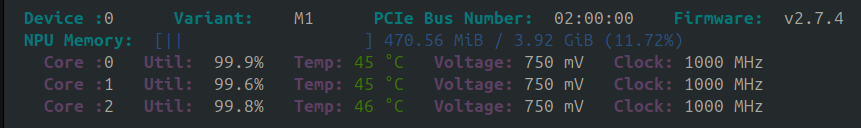
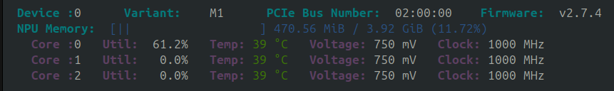
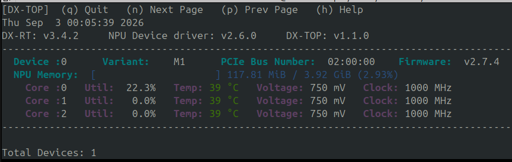
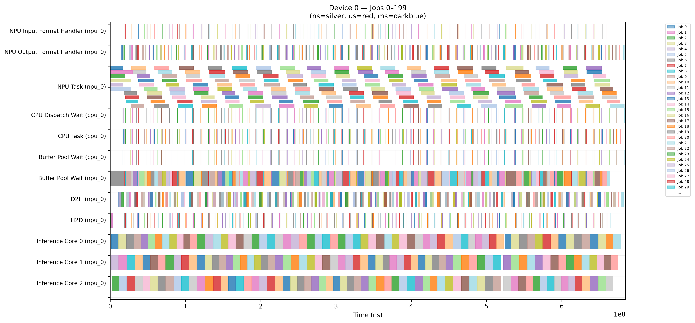
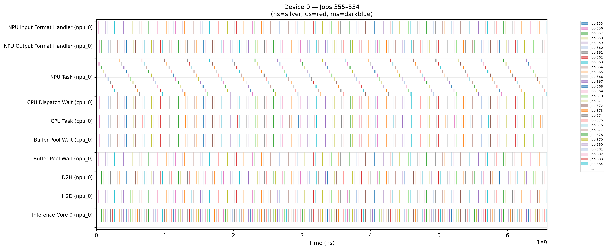

1. Get a model
1. 모델 준비
1. 获取模型
1. モデルを準備する
1.1 DEEPX Model Zoo (web)
1.1 DEEPX Model Zoo (웹)
1.1 DEEPX Model Zoo(网页)
1.1 DEEPX Model Zoo(Web)
developer.deepx.ai/modelzoo
hosts DEEPX's catalog of pre-compiled .dxnn models, organized
by task (object detection, pose estimation, segmentation, classification,
and more). Browse to the model you need and download its .dxnn
file directly — no compiler step required.
developer.deepx.ai/modelzoo는
태스크별(객체 검출, 포즈 추정, 세그멘테이션, 분류 등)로 정리된 DEEPX의 사전 컴파일
.dxnn 모델 카탈로그를 제공합니다. 원하는 모델을 찾아 .dxnn 파일을
바로 다운로드하면 되며, 별도의 컴파일 과정은 필요하지 않습니다.
developer.deepx.ai/modelzoo
提供了按任务分类(目标检测、姿态估计、分割、分类等)整理的 DEEPX 预编译
.dxnn 模型目录。找到您需要的模型后,直接下载其 .dxnn
文件即可——无需任何编译步骤。
developer.deepx.ai/modelzooには、
タスク別(物体検出、姿勢推定、セグメンテーション、分類など)に整理されたDEEPXの
プリコンパイル済み.dxnnモデルカタログが公開されています。必要なモデルを探して
.dxnnファイルを直接ダウンロードするだけで、コンパイル作業は一切不要です。
Grabbing one or two specific models — e.g. to test a customer's exact use case, or a model that isn't part of the dx_app demo set.
특정 모델 한두 개만 필요할 때 — 예를 들어 고객의 실제 사용 사례에 맞는 모델이나, dx_app 데모 세트에 포함되지 않은 모델을 테스트할 때 적합합니다.
只需获取一两个特定模型时——例如需要测试客户的具体使用场景,或测试未包含在 dx_app 演示集合中的模型。
特定のモデルを1つか2つだけ取得したい場合に適しています——例えば顧客の実際のユースケースに合わせたモデルや、dx_appのデモセットに含まれていないモデルをテストする場合です。
1.2 In bulk, via dx_app
1.2 dx_app을 통한 일괄 다운로드
1.2 通过 dx_app 批量下载
1.2 dx_app による一括ダウンロード
dx_app/setup.sh (which wraps setup_sample_models.sh)
downloads models directly from the DEEPX ModelZoo backend, with fine-grained
control over what gets pulled:
dx_app/setup.sh는 (내부적으로 setup_sample_models.sh를 호출하여)
DEEPX ModelZoo 백엔드에서 모델을 직접 다운로드하며, 어떤 모델을 받을지 세밀하게 제어할 수 있습니다:
dx_app/setup.sh(内部封装了 setup_sample_models.sh)会直接从
DEEPX ModelZoo 后端下载模型,并可以精细控制要下载的内容:
dx_app/setup.shは(内部でsetup_sample_models.shを呼び出して)
DEEPX ModelZooバックエンドから直接モデルをダウンロードし、どのモデルを取得するかを細かく制御できます:
cd dx_app
./setup.sh --list # list all available models, no download
./setup.sh --dry-run # preview what --all would download
./setup.sh --demo-models # only the models used by run_demo.sh
./setup.sh --category=object_detection # one task category
./setup.sh --models yolov7 yolov8n_seg # specific models by name
./setup.sh --all # everything (models + sample videos)
./setup.sh --all --workers=8 # more parallel download threads
--all downloads every model plus every
sample video, which needs roughly 30GB of free disk
space. If you only need a subset, use --category,
--models, or --demo-models instead — or run
--dry-run first to see the download size before
committing to it.
--all은 모든 모델과 모든 샘플 비디오를
다운로드하며, 약 30GB의 여유 저장 공간이 필요합니다.
일부만 필요하다면 --category, --models,
--demo-models 옵션을 사용하거나, 먼저
--dry-run으로 다운로드 용량을 확인한 뒤 진행하세요.
--all 会下载全部模型以及全部示例视频,
大约需要 30GB 的可用磁盘空间。如果只需要其中一部分,
请改用 --category、--models 或
--demo-models——或者先运行 --dry-run
查看下载大小,再决定是否继续。
--allはすべてのモデルとすべてのサンプル動画を
ダウンロードするため、およそ30GBの空きディスク容量が必要です。
一部だけ必要な場合は、代わりに--category、--models、
--demo-modelsを使用するか、まず--dry-runを実行して
ダウンロードサイズを確認してから実行してください。
| Option | Description | 옵션 | 설명 | 选项 | 说明 | オプション | 説明 |
|---|---|---|---|---|---|---|---|
--all | Download all models non-interactively | --all | 모든 모델을 비대화형으로 다운로드 | --all | 非交互式下载全部模型 | --all | すべてのモデルを非対話的にダウンロード |
--dry-run | List what would be downloaded, without downloading | --dry-run | 실제 다운로드 없이 목록만 표시 | --dry-run | 仅显示将要下载的内容,不实际下载 | --dry-run | 実際にダウンロードせず、対象一覧のみ表示 |
--list | List available models without downloading | --list | 다운로드 없이 사용 가능한 모델 목록 표시 | --list | 不下载,仅列出可用模型 | --list | ダウンロードせずに利用可能なモデル一覧を表示 |
--demo-models | Only the models used by run_demo.sh | --demo-models | run_demo.sh에서 사용하는 모델만 다운로드 | --demo-models | 仅下载 run_demo.sh 使用的模型 | --demo-models | run_demo.shで使用するモデルのみダウンロード |
--category=<name> | Only models in one task category | --category=<name> | 특정 태스크 카테고리의 모델만 다운로드 | --category=<name> | 仅下载指定任务分类下的模型 | --category=<name> | 特定のタスクカテゴリのモデルのみダウンロード |
--models <m1> [m2...] | Specific models by name | --models <m1> [m2...] | 이름으로 특정 모델(들)만 다운로드 | --models <m1> [m2...] | 按名称下载指定模型 | --models <m1> [m2...] | 名前を指定して特定のモデルをダウンロード |
--workers=<N> | Parallel download threads (default: 4) | --workers=<N> | 병렬 다운로드 스레드 수 (기본값: 4) | --workers=<N> | 并行下载线程数(默认:4) | --workers=<N> | 並列ダウンロードスレッド数(デフォルト:4) |
--no-force | Skip files that already exist (default force-overwrites) | --no-force | 이미 존재하는 파일은 건너뜀 (기본값은 강제 덮어쓰기) | --no-force | 跳过已存在的文件(默认行为是强制覆盖) | --no-force | 既に存在するファイルはスキップ(デフォルトは強制上書き) |
--manifest=<path> | Use an alternate model manifest JSON | --manifest=<path> | 대체 모델 매니페스트 JSON 사용 | --manifest=<path> | 使用替代的模型清单 JSON 文件 | --manifest=<path> | 代替のモデルマニフェスト JSON を使用 |
Models land in dx_app/assets/models/, sample videos in dx_app/assets/videos/.
모델은 dx_app/assets/models/에, 샘플 비디오는 dx_app/assets/videos/에 저장됩니다.
模型将保存到 dx_app/assets/models/,示例视频保存到 dx_app/assets/videos/。
モデルはdx_app/assets/models/に、サンプル動画はdx_app/assets/videos/に保存されます。
Setting up a full evaluation environment in one shot, scripted/CI-friendly downloads, or air-gapped/internal-network installs (--internal, see ./setup.sh --help).
한 번에 전체 평가 환경을 구축하거나, 스크립트/CI 친화적인 다운로드, 또는 폐쇄망/내부망 설치(--internal, ./setup.sh --help 참고)가 필요할 때 적합합니다.
一次性搭建完整的评估环境、适合脚本化/CI 场景的下载,或用于隔离网络/内网安装(--internal,详见 ./setup.sh --help)。
評価環境を一括で構築する場合、スクリプト/CI向けのダウンロード、またはエアギャップ/内部ネットワーク環境でのインストール(--internal、詳細は./setup.sh --help参照)に適しています。
2. dxrun deep dive
2. dxrun 심화
2. dxrun 深入解析
2. dxrun 徹底解説
dxrun (source: dx_rt/cli/dxrun.cpp; legacy alias:
run_model) loads one .dxnn model straight onto
the NPU and measures its raw performance — the model-level number,
independent of any application logic around it.
dxrun(소스: dx_rt/cli/dxrun.cpp, 레거시 별칭:
run_model)은 .dxnn 모델 하나를 NPU에 직접 로드하여
순수 성능을 측정합니다 — 주변 애플리케이션 로직과 무관한 모델 레벨 수치입니다.
dxrun(源码位于 dx_rt/cli/dxrun.cpp;旧版别名:
run_model)会将一个 .dxnn 模型直接加载到 NPU 上并
测量其原始性能——这是与周围任何应用逻辑无关的模型级数值。
dxrun(ソース:dx_rt/cli/dxrun.cpp、レガシーエイリアス:
run_model)は1つの.dxnnモデルをNPUに直接ロードし、
その素の性能を測定します——周囲のアプリケーションロジックに左右されない、モデルレベルの数値です。
2.1 Maximum throughput (benchmark mode)
2.1 최대 처리량 확인 (benchmark 모드)
2.1 最大吞吐量(benchmark 模式)
2.1 最大スループットの確認(benchmark モード)
Benchmark mode (-b) is the default when
neither --single nor --fps > 0 is given. It
pushes the NPU to its maximum sustainable throughput.
benchmark 모드(-b)는 --single이나 --fps > 0이
지정되지 않았을 때의 기본값입니다. NPU를 최대로 유지 가능한 처리량까지 밀어붙입니다.
当既未指定 --single 也未指定 --fps > 0 时,benchmark
模式(-b)是默认模式。它会将 NPU 推到其可持续的最大吞吐量。
--singleも--fps > 0も指定されていない場合、benchmark
モード(-b)がデフォルトになります。NPUを持続可能な最大スループットまで押し上げます。
# Run for a fixed duration (recommended — more stable than a fixed loop count)
dxrun -m model.dxnn --use-ort -t 30
# Use multiple NPU cores explicitly
dxrun -m model.dxnn --use-ort -t 30 -d 0,1,2
# Increase input/output buffer count for pipelined throughput
dxrun -m model.dxnn --use-ort -t 30 --buffer-count 8Check dxtop while this runs — all 3 cores should sit near saturation, and Temp will climb accordingly:
실행 중 dxtop을 확인해보세요 — 3개 코어 모두 포화 상태에 가깝게 유지되고, Temp도 그에 따라 상승합니다:
运行期间请查看 dxtop——3 个核心都应接近饱和状态,温度也会相应上升:
実行中はdxtopを確認してください——3コアすべてがほぼ飽和状態になり、温度もそれに応じて上昇します:

dxtop during a benchmark-mode run — all 3 cores sit at 99.9% / 99.6% / 99.8% Util, 45–46 °C. This is the "before" picture — compare it against 2.3's target-FPS capture, where the same board barely leaves idle.
dxtop로 본 benchmark 모드 실행 화면 — 3개 코어 모두 99.9% / 99.6% / 99.8% Util, 45–46°C를 기록합니다. 이것이 "before" 그림입니다 — 같은 보드가 유휴 상태를 거의 벗어나지 않는 2.3의 target-FPS 캡처와 비교해보세요.
dxtop 显示的 benchmark 模式运行画面——3 个核心的 Util 分别为 99.9% / 99.6% / 99.8%,温度为 45–46 °C。这是"之前"的画面——可以与 2.3 节中同一块板卡在 target-FPS 下几乎保持空闲的截图对比。
dxtopで見たbenchmarkモード実行時の画面——3コアすべてが99.9% / 99.6% / 99.8% Util、45–46 °Cを記録しています。これが「before」の状態です——同じボードがほぼアイドル状態を維持する2.3節のtarget-FPSキャプチャと比較してみてください。
2.2 Single-core, sequential execution (-s, --single)
2.2 단일 코어, 순차 실행 (-s, --single)
2.2 单核、顺序执行 (-s, --single)
2.2 シングルコア・逐次実行 (-s, --single)
Use -s / --single instead for a
single-core, sequential latency measurement (one input
at a time — this is the number you want when the question is
"how long does one inference take", not "how many per second").
단일 코어, 순차 실행 지연시간을 측정하려면 -s / --single을
사용하세요 (한 번에 하나씩 입력 — "1회 추론에 걸리는 시간"이 궁금할 때 사용하며,
"초당 몇 회 처리 가능한가"를 묻는 것이 아닙니다).
如果要测量单核、顺序执行的延迟,请改用 -s / --single
(每次只处理一个输入——当问题是"一次推理需要多长时间",而不是
"每秒能处理多少次"时,这才是你需要的数值)。
シングルコア・逐次実行のレイテンシを測定したい場合は、代わりに-s / --singleを
使用してください(一度に1つの入力のみ処理——知りたいのが「1回の推論にかかる時間」であって
「1秒あたり何回処理できるか」ではない場合に使う数値です)。
dxrun -m assets/models/yolo26-n_640x640.dxnn -v -l 300 --use-ort -sThe performance numbers shown throughout this guide (FPS, latency, NPU Processing Time, temperatures, etc.) are reference measurements from one specific test system, captured for demonstration purposes. Results will vary depending on host CPU, PCIe configuration, DX-RT/driver version, model compilation settings, and overall system configuration — use them to understand the shape of the results, not as an official performance specification for DX-M1 or YOLO26n.
이 가이드 전체에서 보이는 성능 수치(FPS, 지연시간, NPU Processing Time, 온도 등)는 특정 하나의 테스트 시스템에서 측정한 참고용 예시입니다. 호스트 CPU, PCIe 구성, DX-RT/드라이버 버전, 모델 컴파일 설정, 전체 시스템 구성에 따라 결과가 달라질 수 있습니다 — 이 수치를 DX-M1이나 YOLO26n의 공식 성능 사양으로 받아들이지 말고, 결과의 전체적인 경향을 이해하는 용도로 참고하세요.
本指南中出现的所有性能数据(FPS、延迟、NPU Processing Time、温度等) 均来自某一台特定测试系统,仅用于演示目的。实际结果会因主机 CPU、PCIe 配置、DX-RT/驱动版本、模型编译设置以及整体系统配置而有所不同——请将 这些数字用于理解结果的整体趋势,而不要将其视为 DX-M1 或 YOLO26n 的 官方性能规格。
本ガイド全体に登場する性能数値(FPS、レイテンシ、NPU Processing Time、 温度など)は、特定の1台のテストシステムで取得した参考測定値であり、 デモンストレーション目的で提示しています。実際の結果は、ホスト CPU、 PCIe 構成、DX-RT/ドライバのバージョン、モデルのコンパイル設定、システム 構成全体によって変動します——これらの数値は結果の傾向を把握するための 参考としてご利用いただき、DX-M1 や YOLO26n の公式な性能仕様として扱わ ないようにしてください。
Notice the label changed to "Benchmark Result (single input)"
— with -s, dxrun still loops -l 300
times, but it issues each of those 300 requests one at a time,
strictly sequentially, and reports per-request statistics
instead of the pipelined-throughput view you saw in 2.1's
default mode. A few things worth reading carefully in these three numbers:
- NPU Processing Time (7.238 ms) is only the slice of time the NPU core itself spends computing — it excludes moving data to/from the device.
- Latency (11.638 ms) is noticeably higher than
the NPU Processing Time. That ~4.4 ms gap is exactly the
H2D transfer, NPU Input/Output Format Handler, and D2H
transfer overhead you measured directly in the
2.5 Profiling section — with
-sthere's no other request in flight to hide that overhead behind, so it shows up in full on every single one. - FPS (84.86) is essentially
1000 / Latency(1000 / 11.638 ≈ 85.9, close to the reported 84.86 once you also account for the small extra bookkeeping between iterations). This is the key thing-stells you: when there is no pipelining at all — no next request queued up while the current one is still finishing — this is the honest, worst-case throughput ceiling for a single stream of strictly sequential requests on one NPU core. It is far below the multi-hundred-FPS numbers from benchmark mode, and that's expected: benchmark mode overlaps many in-flight requests across all 3 cores to hide exactly this transfer/format-handling overhead, while-sdeliberately refuses to.
결과 레이블이 "Benchmark Result (single input)"로 바뀐
것에 주목하세요 — -s를 사용해도 -l 300에 따라
여전히 300회 반복은 수행하지만, 그 300번의 요청을 한 번에
하나씩, 철저히 순차적으로 실행하고, 2.1의
기본 모드에서 봤던 파이프라인 처리량 관점이 아니라 요청 1회당
통계를 보고합니다. 이 세 수치에서 눈여겨볼 부분은 다음과 같습니다:
- NPU Processing Time (7.238ms)은 NPU 코어 자체가 연산에 사용한 시간만을 의미하며, 장치로/에서 데이터를 옮기는 시간은 포함하지 않습니다.
- Latency (11.638ms)는 NPU Processing Time보다
눈에 띄게 큽니다. 이 약 4.4ms의 차이는 2.5 Profiling
섹션에서 직접 측정했던 H2D 전송, NPU Input/Output Format
Handler, D2H 전송 오버헤드와 정확히 일치합니다 —
-s모드에서는 이 오버헤드를 가려줄 다른 요청이 동시에 진행 중이지 않기 때문에, 매 요청마다 그대로 드러납니다. - FPS (84.86)는 사실상
1000 / Latency와 같습니다 (1000 / 11.638 ≈ 85.9로, 반복 사이의 약간의 추가 오버헤드를 감안하면 보고된 84.86에 근접합니다). 이것이 바로-s가 알려주는 핵심입니다: 파이프라이닝이 전혀 없을 때 — 즉 현재 요청이 끝나기 전에 다음 요청이 미리 큐에 들어가 있지 않을 때 — NPU 코어 1개에서 순차적인 단일 스트림 요청이 낼 수 있는 정직한 최악의 처리량 한계가 바로 이 수치입니다. benchmark 모드의 수백 FPS에 비하면 훨씬 낮은데, 이는 당연한 결과입니다 — benchmark 모드는 3개 코어 전체에 걸쳐 여러 요청을 동시에 진행시켜 바로 이 전송/포맷 처리 오버헤드를 가리는 반면,-s는 의도적으로 그렇게 하지 않기 때문입니다.
请注意标签变成了 "Benchmark Result (single input)"——使用
-s 时,dxrun 仍然会按照 -l 300
循环 300 次,但会把这 300 次请求逐一严格按顺序、一次一个
地发出,并报告每次请求的统计数据,而不是像 2.1 的默认模式
那样呈现流水线吞吐量视图。这三个数值中有几点值得仔细解读:
- NPU Processing Time(7.238 ms)仅表示 NPU 核心本身用于计算的那部分时间——不包括数据在设备间传输的时间。
- Latency(11.638 ms)明显高于 NPU Processing Time。这约 4.4 ms 的差距正是您在2.5 Profiling一节中直接测得的H2D 传输、NPU Input/Output Format Handler、D2H 传输开销——在
-s模式下没有其他并发请求可以掩盖这部分开销,因此每一次请求都会完整地暴露出来。 - FPS(84.86)本质上就是
1000 / Latency(1000 / 11.638 ≈ 85.9,再算上迭代之间的少量额外开销后,就接近报告的 84.86)。这正是-s要告诉你的关键信息:当完全没有流水线化——即当前请求尚未完成时不会有下一个请求排队——这就是单个 NPU 核心上严格顺序单流请求的、诚实的最坏情况吞吐量上限。它远低于 benchmark 模式下几百 FPS 的数字,这也是预期之中的:benchmark 模式会在全部 3 个核心上重叠多个在途请求,从而掩盖这部分传输/格式处理开销,而-s则刻意不这样做。
ラベルが「Benchmark Result (single input)」に変わっていることに注目してください——-sを使ってもdxrunは-l 300の指定どおり300回ループしますが、その300回のリクエストを1つずつ、厳密に逐次的に発行し、2.1のデフォルトモードで見たパイプライン化されたスループットの視点ではなく、リクエストごとの統計を報告します。この3つの数値には、注意深く読むべき点がいくつかあります:
- NPU Processing Time(7.238 ms)は、NPUコア自体が計算に費やした時間のみを表します——デバイスとの間でのデータ転送時間は含まれません。
- Latency(11.638 ms)はNPU Processing Timeより明らかに高くなっています。この約4.4 msのギャップは、まさに2.5 Profiling節で直接測定したH2D転送、NPU Input/Output Format Handler、D2H転送のオーバーヘッドです——
-sではこのオーバーヘッドを隠してくれる他の並行リクエストが存在しないため、毎回のリクエストでそのまま表面化します。 - FPS(84.86)は本質的に
1000 / Latencyです(1000 / 11.638 ≈ 85.9で、反復間の若干の追加処理を考慮すれば報告値の84.86に近づきます)。これこそ-sが教えてくれる重要な点です:パイプライン化が一切ない状態——現在のリクエストが完了する前に次のリクエストがキューに入っていない状態——では、これが1つのNPUコア上で厳密に逐次実行される単一ストリームの、正直な最悪ケースのスループット上限です。これはbenchmarkモードの数百FPSという数字よりはるかに低く、それは想定通りです。benchmarkモードは3コアすべてにまたがって多数の実行中リクエストを重ね合わせることで、まさにこの転送/フォーマット処理オーバーヘッドを隠しますが、-sは意図的にそれをしません。
Check dxtop while this runs — with -s, only a single NPU core shows activity; the rest stay idle:
실행 중 dxtop을 확인해보세요 — -s를 사용하면 NPU 코어 하나에서만 활동이 나타나고 나머지는 유휴 상태를 유지합니다:
运行期间请查看 dxtop——使用 -s 时,只有一个 NPU 核心会显示活动,其余核心保持空闲:
実行中はdxtopを確認してください——-sを使うと1つのNPUコアだけが活動を示し、残りはアイドル状態のままです:

dxtop during dxrun -s — only one core's Util moves off idle; the others stay at ~0%, confirming --single really does run sequentially on a single core rather than spreading work across all of them like benchmark mode does.
dxrun -s 실행 중 dxtop 화면 — 코어 하나의 Util만 유휴 상태를 벗어나고 나머지는 ~0%를 유지합니다. benchmark 모드처럼 전체 코어에 작업을 분산하는 것이 아니라, --single이 실제로 코어 하나에서 순차적으로 실행됨을 확인할 수 있습니다.
dxrun -s 运行期间的 dxtop 画面——只有一个核心的 Util 脱离空闲状态,其余核心保持在 ~0%,证实了 --single 确实只在单个核心上顺序执行,而不像 benchmark 模式那样把工作分散到所有核心上。
dxrun -s実行中のdxtop画面——1つのコアのUtilだけがアイドル状態から動き、残りは~0%のままです。これは--singleがbenchmarkモードのように全コアへ作業を分散するのではなく、実際に単一コアで逐次実行していることを裏付けています。
2.3 FPS-limited mode (-f, --fps)
2.3 FPS 제한 모드 (-f, --fps)
2.3 FPS 限制模式 (-f, --fps)
2.3 FPS 制限モード (-f, --fps)
For many camera-based edge applications, maximum throughput is rarely how a model runs in production — a 30 fps camera feed doesn't need the NPU running flat-out, since inference demand is bounded by the input frame rate. Target-FPS mode caps the input rate to a fixed FPS so you can check latency and stability under a representative, capped load instead of a saturated one, on the exact same model you benchmarked in 2.1.
많은 카메라 기반 엣지 애플리케이션에서는 실제 운영 환경에서 최대 처리량으로 모델을 돌리는 경우가 드뭅니다 — 추론 수요가 입력 프레임 속도에 의해 제한되기 때문에, 30fps 카메라 입력이라면 NPU가 최대 속도로 동작할 필요가 없습니다. target-FPS 모드는 입력 속도를 고정된 FPS로 제한하여, 2.1에서 벤치마크한 것과 동일한 모델에 대해 포화 상태가 아닌 대표적이고 제한된 부하에서의 지연시간과 안정성을 확인할 수 있게 해줍니다.
对于许多基于摄像头的边缘应用而言,在生产环境中模型很少以最大吞吐量 运行——由于推理需求受输入帧率限制,30fps 的摄像头输入并不需要 NPU 全力运转。target-FPS 模式会将输入速率限制在固定的 FPS,让您可以针对 2.1 中基准测试过的同一模型,检查在具有代表性 且受限的负载下的延迟和稳定性,而不是饱和状态下的表现。
多くのカメラベースのエッジアプリケーションでは、推論需要が入力 フレームレートによって制限されるため、本番環境でモデルが最大 スループットで動作することはほとんどなく、30fpsのカメラ入力では NPUをフル稼働させる必要はありません。target-FPSモードは入力レートを 一定のFPSに制限することで、2.1でベンチマークしたのと 同じモデルについて、飽和状態ではなく代表的で制限された負荷下 でのレイテンシと安定性を確認できます。
Target-FPS mode automatically activates whenever -f is
greater than 0 and --single is not set — it's
mutually exclusive with 2.2's single-core mode. Combine
it with -v to see per-frame NPU processing time and latency.
-f가 0보다 크고 --single이 지정되지 않으면
target-FPS 모드가 자동으로 활성화됩니다 — 2.2의 단일 코어 모드와는
상호 배타적입니다. -v를 함께 사용하면 프레임별 NPU 처리 시간과
지연시간을 확인할 수 있습니다.
只要 -f 大于 0 且未设置 --single,target-FPS
模式就会自动启用——它与2.2的单核模式互斥。可以结合 -v
查看每帧的 NPU 处理时间和延迟。
-fが0より大きく、かつ--singleが設定されていない
場合、target-FPSモードは自動的に有効になります——これは2.2の
シングルコアモードとは排他的です。-vと組み合わせることで、フレームごとの
NPU処理時間とレイテンシを確認できます。
# Cap the input rate at 30 fps (matches a typical camera feed) for 30 seconds,
# with the profiler enabled so we get a per-stage breakdown of this exact load
dxrun -m assets/models/yolo26-n_640x640.dxnn --use-ort -f 30 -t 30 --profiler -v
FPS (30.30) lands right at the -f 30
target, confirming the throttle is doing its job, and
NPU Processing Time (7.236 ms) /
Latency (11.654 ms) are essentially identical to
the single-core, no-pipelining numbers measured with
-s in 2.2 (7.238 ms / 11.638 ms).
That's not a coincidence, and the profiler table above proves it
directly: only Inference Core 0 appears — no Core 1 or
Core 2 row at all — meaning this 30 fps load really is being served
by one physical core the entire time, exactly like -s forces
in 2.2, just without needing the flag. At 30 fps the NPU is nowhere
near the ~300 fps ceiling from 2.1, so a single
core alone can keep up — there is no reason for the runtime to spread
work across more of them.
FPS(30.30)는 -f 30 목표값에 정확히 맞아떨어져
throttle이 제대로 동작함을 보여주고, NPU Processing Time(7.236ms) /
Latency(11.654ms)는 2.2에서 -s로
측정한 단일 코어, 파이프라이닝 없는 수치(7.238ms / 11.638ms)와
사실상 동일합니다. 이는 우연이 아니며, 위 프로파일러 표가 직접 증명합니다 —
Inference Core 0만 나타나고 Core 1이나 Core 2 행은 아예
존재하지 않습니다 — 즉 이 30fps 부하는 처음부터 끝까지 물리 코어 하나로만
처리되고 있다는 뜻이며, -s 플래그 없이도 2.2에서 강제했던 것과
동일한 상황이 그대로 재현된 것입니다. 30fps에서는 NPU가 2.1의
~300fps 한계에 전혀 가깝지 않기 때문에, 코어 하나만으로도 충분히 감당할 수
있어 런타임이 굳이 더 많은 코어에 작업을 분산할 이유가 없습니다.
FPS(30.30)恰好落在 -f 30 的目标值上,证实了限速功能
正常工作,而 NPU Processing Time(7.236 ms) /
Latency(11.654 ms) 与2.2中用
-s 测得的单核、无流水线数值(7.238 ms / 11.638 ms)
基本一致。这并非巧合,上面的 profiler 表格直接证明了这一点:表中只出现了
Inference Core 0——完全没有 Core 1 或 Core 2 这一行——说明这个
30 fps 的负载实际上自始至终都由一个物理核心处理,与 2.2 中用 -s
强制实现的情况完全一致,只是不需要这个标志。在 30 fps 下,NPU 远未接近
2.1中约 300 fps 的上限,因此单个核心就足以应对——运行时没有理由
把工作分散到更多核心上。
FPS(30.30)は-f 30の目標値ちょうどに収まっており、
スロットルが正しく機能していることを裏付けています。またNPU Processing Time
(7.236 ms) / Latency(11.654 ms)は、
2.2で-sを使って測定したシングルコア・
パイプラインなしの数値(7.238 ms / 11.638 ms)とほぼ同一です。
これは偶然ではなく、上のprofilerテーブルがそれを直接証明しています——
Inference Core 0だけが現れ、Core 1やCore 2の行はまったく存在しません
——つまりこの30 fpsの負荷は、2.2で-sが強制していたのとまったく同じ
ように、最初から最後まで物理コア1つだけで処理されているということです。フラグを付けなく
てもです。30 fpsではNPUは2.1の約300 fpsという上限には全く
近づいていないため、コア1つだけで十分対応でき、ランタイムがより多くのコアに作業を分散する
理由がありません。
The Buffer Pool Wait row makes the same point from a
different angle: the NPU-side average here is
2.94 us (CPU-side: 2.19 us),
versus 3494.67 us (CoV 84.17%) for the equivalent
NPU-side row in 2.5's full-throughput capture (which
didn't use --use-ort, so it has no CPU section to compare) —
roughly three orders of magnitude smaller. With no other request queued
up competing for a buffer, there's essentially nothing to wait for. See
2.5 for what each row in this table means.
Buffer Pool Wait 값도 같은 이야기를 다른 각도에서
보여줍니다: 여기서는 NPU 쪽 평균이 2.94us(CPU 쪽은
2.19us)인 반면, 2.5의 최대 처리량
캡처에서는 동일한 NPU 쪽 항목이 3494.67us(CoV 84.17%)였습니다
(해당 캡처는 --use-ort 없이 측정되어 CPU 섹션 자체가 없습니다) —
대략 세 자릿수 정도 더 작습니다. 버퍼를 두고 경쟁하는 다른 요청이 없으니
기다릴 것이 사실상 없는 것입니다. 이 표의 각 항목이 의미하는 바는
2.5를 참고하세요.
Buffer Pool Wait 这一行从另一个角度说明了同样的问题:这里的
NPU 侧平均值为 2.94 us(CPU 侧为 2.19 us),
而2.5节全吞吐量捕获中对应的 NPU 侧行数值为 3494.67 us
(CoV 84.17%)(该捕获未使用 --use-ort,因此没有 CPU 部分可供比较)——
大约小了三个数量级。由于没有其他请求排队争抢缓冲区,基本上没有什么需要等待的。
这张表中各行的含义请参见2.5。
Buffer Pool Wait行は、同じことを別の角度から示しています。
ここでのNPU側平均は2.94 us(CPU側:2.19 us)
であるのに対し、2.5節のフルスループットキャプチャにおける同等の
NPU側行は3494.67 us(CoV 84.17%)でした(このキャプチャは
--use-ortを使用していないため、比較できるCPUセクションがありません)——
およそ3桁小さい値です。バッファを取り合う他のリクエストがないため、待つべきものが
実質的に存在しないのです。この表の各行の意味については2.5を参照してください。
Check dxtop during this run — unlike 2.1's benchmark run, per-core Util stays well below 20% and Temp stays close to the idle baseline instead of climbing:
이 실행 중 dxtop을 확인해보세요 — 2.1의 benchmark 실행과 달리, 코어별 Util이 20%에 훨씬 못 미치는 수준을 유지하고 Temp도 상승하지 않고 유휴 상태 기준값에 가깝게 유지됩니다:
运行期间请查看 dxtop——与2.1的 benchmark 运行不同,各核心的 Util 会保持在远低于 20% 的水平,温度也接近空闲基线而不会上升:
この実行中はdxtopを確認してください——2.1のbenchmark実行とは異なり、コアごとのUtilは20%を大きく下回ったままで、温度も上昇せず、アイドル時のベースラインに近い状態を保ちます:

dxtop during a 30 fps target-FPS run — per-core Util stays well below 20%, a sharp contrast with the ~100% seen in 2.1's benchmark-mode run.
30fps target-FPS 실행 중 dxtop 화면 — 2.1의 benchmark 모드 실행에서 본 ~100%와 달리, 코어별 Util이 20%에 훨씬 못 미치는 수준을 유지합니다.
30 fps target-FPS 运行期间的 dxtop 画面——各核心 Util 保持在远低于 20% 的水平,与 2.1 节 benchmark 模式运行中所见的 ~100% 形成鲜明对比。
30 fps target-FPS実行中のdxtop画面——コアごとのUtilは20%を大きく下回ったままで、2.1節のbenchmarkモード実行で見られた~100%とは対照的です。
| Mode | Command | NPU Util (dxtop) | Temp trend | What it tells you | 모드 | 명령어 | NPU 사용률 (dxtop) | 온도 추이 | 확인할 수 있는 것 | 模式 | 命令 | NPU 利用率 (dxtop) | 温度趋势 | 说明的内容 | モード | コマンド | NPU使用率 (dxtop) | 温度傾向 | わかること |
|---|---|---|---|---|---|---|---|---|---|---|---|---|---|---|---|---|---|---|---|
| Benchmark (2.1) | dxrun -m ... --use-ort -t 30 |
~100% (99.9 / 99.6 / 99.8%) | Rises to 45–46 °C | The model's maximum throughput ceiling | |||||||||||||||
| Benchmark (2.1) | dxrun -m ... --use-ort -t 30 |
~100% (99.9 / 99.6 / 99.8%) | 45–46°C까지 상승 | 모델의 최대 처리량 한계 | |||||||||||||||
| Benchmark (2.1) | dxrun -m ... --use-ort -t 30 |
~100%(99.9 / 99.6 / 99.8%) | 上升至 45–46°C | 模型的最大吞吐量上限 | |||||||||||||||
| Benchmark (2.1) | dxrun -m ... --use-ort -t 30 |
~100%(99.9 / 99.6 / 99.8%) | 45–46°Cまで上昇 | モデルの最大スループット上限 | |||||||||||||||
| Target-FPS (2.3, 30 fps) | dxrun -m ... --use-ort -f 30 -t 30 |
below 20% | Stays near idle | Real deployment headroom & thermal picture | |||||||||||||||
| Target-FPS (2.3, 30fps) | dxrun -m ... --use-ort -f 30 -t 30 |
20%보다 낮음 | 유휴 상태에 가까움 | 실제 배포 시의 여유 용량과 열적 특성 | |||||||||||||||
| Target-FPS (2.3, 30 fps) | dxrun -m ... --use-ort -f 30 -t 30 |
低于 20% | 接近空闲状态 | 实际部署时的余量与热特性 | |||||||||||||||
| Target-FPS (2.3, 30 fps) | dxrun -m ... --use-ort -f 30 -t 30 |
20%未満 | アイドルに近い状態を維持 | 実際のデプロイ時の余裕と温度特性 |
If the NPU temperature rises during a benchmark run, first check
whether the workload is running in maximum-throughput mode.
Maximum-throughput benchmarking intentionally drives NPU utilization
close to 100%. To evaluate thermal behavior under a representative
deployment workload, use -f <target fps> and monitor
utilization and temperature with dxtop.
벤치마크 실행 중 NPU 온도가 상승한다면, 먼저 해당 워크로드가 최대
처리량(maximum-throughput) 모드로 실행 중인지 확인하세요. 최대 처리량
벤치마크는 의도적으로 NPU 활용률을 100%에 가깝게 끌어올립니다. 대표적인
배포 워크로드 기준으로 발열 특성을 평가하려면 -f <목표
fps>를 사용하고, dxtop으로 활용률과 온도를 함께
확인하세요.
如果在 benchmark 运行过程中 NPU 温度上升，首先请确认该负载是否运行在
最大吞吐量(maximum-throughput)模式下。最大吞吐量 benchmark 会刻意将
NPU 利用率推高到接近 100%。若要在具有代表性的部署负载下评估发热情况，
请使用 -f <目标 fps>，并通过 dxtop 同时
观察利用率与温度。
benchmark 実行中に NPU 温度が上昇する場合は、まずそのワークロードが
最大スループット(maximum-throughput)モードで動作していないか確認して
ください。最大スループットのベンチマークは、意図的に NPU 使用率を
100%近くまで引き上げます。代表的なデプロイワークロードにおける発熱の
挙動を評価するには、-f <目標 fps> を使用し、
dxtop で使用率と温度を併せて確認してください。
2.4 NPU Bounding (-n, --npu)
2.4 NPU Bounding (-n, --npu)
2.4 NPU 绑定 (-n, --npu)
2.4 NPU バウンディング (-n, --npu)
-n / --npu restricts a run to a subset of the
NPU cores inside one device — it does not change how
many requests are pipelined, only which physical core(s) are allowed to
execute them. This is a different axis from -d /
--devices, which selects which device(s)
(chips) to use in a multi-device system; -n then selects
core(s) within each of those devices.
-n / --npu는 디바이스 하나 안에서
사용할 NPU 코어의 부분집합을 제한합니다 — 몇 개의 요청이 파이프라이닝되는지가
아니라, 어떤 물리 코어가 그 요청들을 처리할 수 있는지를 제한하는 것입니다.
이는 멀티 디바이스 환경에서 사용할 디바이스(칩) 자체를
고르는 -d / --devices와는 다른 축입니다 —
-n은 그렇게 선택된 각 디바이스 내부의 코어를 다시
선택합니다.
-n / --npu 会将一次运行限制在单个设备内
的部分 NPU 核心上——它不会改变有多少请求被流水线化,只决定哪些物理核心被允许执行
这些请求。这与 -d / --devices 是不同的维度:后者用于在
多设备系统中选择使用哪个(些)设备(芯片);而 -n
则是在那些设备内部选择核心。
-n / --npuは、実行を1つのデバイス内の
一部のNPUコアに制限します——パイプライン化されるリクエスト数は変わらず、どの物理
コアがそれらを実行できるかだけが変わります。これは、マルチデバイス構成において
どのデバイス(チップ)を使うかを選ぶ-d /
--devicesとは異なる軸です。-nは、それぞれのデバイスの
内部でコアを選択します。
# Restrict the run to NPU core 0 only — still pipelined (multiple
# in-flight requests), just confined to a single physical core
dxrun -m model.dxnn --use-ort -t 30 -n 1 -v
# Restrict to a pair of cores (NPU_0 + NPU_1), leaving NPU_2 completely
# free for another model or process
dxrun -m model.dxnn --use-ort -t 30 -n 4
Encoding: 0=ALL, 1=NPU_0, 2=NPU_1,
3=NPU_2, 4=NPU_0/1, 5=NPU_1/2,
6=NPU_0/2 (default: 0).
인코딩: 0=전체, 1=NPU_0, 2=NPU_1,
3=NPU_2, 4=NPU_0/1, 5=NPU_1/2,
6=NPU_0/2 (기본값: 0).
编码:0=全部,1=NPU_0,2=NPU_1,
3=NPU_2,4=NPU_0/1,5=NPU_1/2,
6=NPU_0/2(默认值:0)。
エンコーディング:0=全て、1=NPU_0、2=NPU_1、
3=NPU_2、4=NPU_0/1、5=NPU_1/2、
6=NPU_0/2(デフォルト:0)。
Multi-model deployments where each model gets a dedicated core
(e.g. Model A pinned to NPU_0, Model B to NPU_1/2). -n
lets you benchmark that exact core allocation in
isolation — the throughput you measure is what Model A will actually
get once the other cores are busy with Model B, not the inflated
number you'd see letting it use all 3 cores during the test. Confirm
the binding took effect with -v or by watching
dxtop — only the bound core(s) should show non-zero Util.
모델마다 전용 코어를 할당하는 멀티 모델 배포 상황(예: Model A는
NPU_0에 고정, Model B는 NPU_1/2 사용)에 특히 유용합니다. -n을
쓰면 그 코어 할당 그대로를 독립적으로 벤치마크할 수
있습니다 — 이렇게 측정한 처리량이 다른 코어들이 Model B로 바빠진
이후 Model A가 실제로 받게 될 처리량이며, 테스트 중에 코어 3개를 전부
쓰게 뒀을 때 나오는 부풀려진 수치가 아닙니다. -v나
dxtop으로 실제 바인딩이 적용됐는지(지정한 코어만 Util이
0보다 큰지) 확인하세요.
适用于每个模型都分配专属核心的多模型部署场景(例如 Model A 固定在 NPU_0,
Model B 使用 NPU_1/2)。借助 -n,您可以单独对这一确切的
核心分配方案进行基准测试——测得的吞吐量就是当其他核心被 Model B
占用后 Model A 实际能获得的吞吐量,而不是测试时让它使用全部 3 个核心所得到
的虚高数值。可以用 -v 或观察 dxtop 来确认绑定是否
生效——只有被绑定的核心应显示非零 Util。
各モデルに専用コアを割り当てるマルチモデル展開(例:Model AをNPU_0に固定し、
Model BをNPU_1/2で実行)に有効です。-nを使えば、その
正確なコア割り当てを単独でベンチマークできます——測定されるスループット
は、他のコアがModel Bで使用中になった後にModel Aが実際に得られる値であり、
テスト中に3コア全てを使わせた場合に見える水増しされた数値ではありません。
バインディングが有効になっていることは-vやdxtopを
見て確認してください——バインドされたコアのみUtilが0より大きくなるはずです。
2.5 Profiling (--profiler)
2.5 프로파일링 (--profiler)
2.5 性能剖析 (--profiler)
2.5 プロファイリング (--profiler)
Add --profiler to any run to collect detailed, per-stage
timing data into a profiler.json file in the working
directory — useful for diagnosing exactly where time goes inside a run.
어떤 실행에든 --profiler를 추가하면 작업 디렉터리에 상세한 단계별
타이밍 데이터가 담긴 profiler.json 파일이 생성됩니다 — 실행 중
시간이 정확히 어디에 소요되는지 진단할 때 유용합니다.
在任意运行中加上 --profiler,即可将详细的分阶段计时数据收集到
工作目录下的 profiler.json 文件中——便于精确诊断运行过程中时间
都花在了哪里。
任意の実行に--profilerを追加すると、作業ディレクトリ内の
profiler.jsonファイルに詳細なステージ別タイミングデータが記録
されます——実行中に時間がどこで消費されているかを正確に診断するのに役立ちます。
# Profile a benchmark run
dxrun -m model.dxnn --use-ort --profiler -l 50
# Profile a 60-second maximum-throughput benchmark
dxrun -m model.dxnn --use-ort --benchmark --profiler -t 60
# Combine profiling with a custom buffer count and verbose per-run output
dxrun -m model.dxnn --use-ort --profiler --buffer-count 10 -l 200 -v
--profiler does two things: it prints a min/max/average/CoV
summary table to the console and writes every individual
timestamp to profiler.json. Here's a real example (1024
loops, --use-ort not set):
--profiler는 두 가지 일을 합니다: 콘솔에 min/max/average/CoV
요약 테이블을 출력하고, profiler.json에 개별 타임스탬프를
모두 기록합니다. 다음은 실제 예시입니다 (1024회 반복, --use-ort
미사용):
--profiler 会做两件事:在控制台打印 min/max/average/CoV 摘要
表格,同时将每一个单独的时间戳写入 profiler.json。
下面是一个真实示例(1024 次循环,未设置 --use-ort):
--profilerは2つのことを行います:min/max/average/CoVの要約
テーブルをコンソールに出力し、同時に個々のタイムスタンプをすべて
profiler.jsonに書き込みます。以下は実際の例です(1024回ループ、
--use-ortは未設定):
↑ Example captured on a 3-core DX-M1 board. Exact timings will differ on your system, model, and load — read the shape of the table, not the literal numbers.
↑ 3코어 DX-M1 보드에서 측정한 예시입니다. 실제 수치는 시스템, 모델, 부하에 따라 달라집니다 — 숫자 자체보다 표의 구조를 참고하세요.
↑ 该示例采集自一块 3 核 DX-M1 板卡。具体数值会因您的系统、模型和负载而不同 ——请关注表格的整体形态,而非具体数字本身。
↑ この例は3コアのDX-M1ボードで取得したものです。実際の数値はシステム、モデル、 負荷によって異なります——数値そのものではなく、表の傾向を読み取ってください。
| Row | What it means | 항목 | 의미 | 行 | 含义 | 行 | 意味 |
|---|---|---|---|---|---|---|---|
| Buffer Pool Wait | Time a request waits for a free input/output buffer before the pipeline can even start. High value or high CoV here usually means --buffer-count is too small for your load. |
||||||
| Buffer Pool Wait | 파이프라인이 시작되기 전, 요청이 빈 입출력 버퍼를 기다리는 시간입니다. 값이나 CoV가 높다면 대개 --buffer-count가 현재 부하에 비해 너무 작다는 뜻입니다. |
||||||
| Buffer Pool Wait | 请求在流水线开始处理之前,等待可用输入/输出缓冲区的时间。此处数值或 CoV 偏高,通常说明 --buffer-count 相对当前负载设置得太小。 |
||||||
| Buffer Pool Wait | パイプラインが開始する前に、リクエストが空きの入出力バッファを待つ時間です。この値やCoVが高い場合、たいてい--buffer-countが現在の負荷に対して小さすぎることを意味します。 |
||||||
| NPU Task (total) | Total wall time for one job through the entire NPU-side pipeline — input format → transfer → inference → transfer → output format, summed below. | ||||||
| NPU Task (total) | 작업 하나가 NPU 측 파이프라인 전체(입력 포맷 변환 → 전송 → 추론 → 전송 → 출력 포맷 변환, 아래 항목의 합)를 통과하는 전체 시간입니다. | ||||||
| NPU Task (total) | 一个任务经过整个 NPU 侧流水线的总耗时——即下方各行的总和:输入格式转换 → 传输 → 推理 → 传输 → 输出格式转换。 | ||||||
| NPU Task (total) | 1つのジョブがNPU側パイプライン全体(入力フォーマット変換 → 転送 → 推論 → 転送 → 出力フォーマット変換)を通過する総所要時間です。下記の各項目の合計に相当します。 | ||||||
| NPU Input / Output Format Handler | CPU-side conversion of the buffer into/out of the NPU's native tensor format. | ||||||
| NPU Input / Output Format Handler | 버퍼를 NPU 고유의 텐서 포맷으로 변환하거나(입력), 다시 변환해 돌려주는(출력) CPU 측 작업입니다. | ||||||
| NPU Input / Output Format Handler | 在 CPU 侧将缓冲区转换为(或转换回)NPU 原生张量格式的过程。 | ||||||
| NPU Input / Output Format Handler | バッファをNPU固有のテンソル形式へ変換(入力)、または元に戻す(出力)CPU側の処理です。 | ||||||
| H2D / D2H | PCIe data transfer Host→Device (input) and Device→Host (output). | ||||||
| H2D / D2H | PCIe를 통한 Host→Device(입력) / Device→Host(출력) 데이터 전송 시간입니다. | ||||||
| H2D / D2H | 通过 PCIe 进行的 Host→Device(输入)/ Device→Host(输出)数据传输。 | ||||||
| H2D / D2H | PCIe経由のHost→Device(入力)/Device→Host(出力)のデータ転送時間です。 | ||||||
| Inference / Inference Core 0–2 | Actual NPU compute time, combined and per-core. This is the number that maps directly to what dxtop's per-core Util reflects, and to the NPU ceiling you measure with plain dxrun. |
||||||
| Inference / Inference Core 0–2 | 실제 NPU 연산 시간으로, 코어 통합값과 코어별 값을 함께 보여줍니다. dxtop의 코어별 Util이 반영하는 값, 그리고 기본 dxrun으로 측정하는 NPU 한계 성능과 직접 연결되는 수치입니다. |
||||||
| Inference / Inference Core 0–2 | 实际的 NPU 计算时间,包含合计值与各核心的分项数值。这个数值直接对应 dxtop 中各核心 Util 所反映的内容,也对应使用普通 dxrun 测得的 NPU 性能上限。 |
||||||
| Inference / Inference Core 0–2 | 実際のNPU計算時間で、合計値とコアごとの値の両方を示します。これはdxtopのコアごとのUtilが反映する数値、および素のdxrunで測定するNPUの性能上限に直接対応する数値です。 |
||||||
| CoV (%) | Coefficient of variation — how much a stage's timing jitters run to run. Low CoV means predictable timing; a stage with unusually high CoV (like Buffer Pool Wait above) is often the first place to look when chasing inconsistent latency. |
||||||
| CoV (%) | 변동 계수 — 해당 단계의 소요 시간이 매 실행마다 얼마나 들쭉날쭉한지를 나타냅니다. CoV가 낮으면 시간이 안정적이라는 뜻이고, 위 예시의 Buffer Pool Wait처럼 비정상적으로 높은 CoV는 지연시간 불균일 문제를 조사할 때 가장 먼저 살펴봐야 할 지점입니다. |
||||||
| CoV (%) | 变异系数——表示某个阶段的耗时在每次运行之间波动的程度。CoV 低说明耗时可预测;像上面的 Buffer Pool Wait 这样 CoV 异常高的阶段,往往是排查延迟不稳定问题时应该首先查看的地方。 |
||||||
| CoV (%) | 変動係数——あるステージの所要時間が実行ごとにどれだけばらつくかを示します。CoVが低ければ所要時間が予測可能であることを意味し、上のBuffer Pool WaitのようにCoVが異常に高いステージは、レイテンシの不安定さを調査する際に最初に確認すべき箇所であることが多いです。 |
CPU Dispatch Wait and CPU Task rows appear alongside these only when --use-ort is also set — this capture didn't use it, so the model ran NPU-only and no CPU section was printed.
CPU Dispatch Wait, CPU Task 항목은 --use-ort를 함께 사용했을 때만 추가로 나타납니다 — 이 예시는 해당 옵션 없이 NPU 전용으로 실행되어 CPU 섹션이 출력되지 않았습니다.
只有同时设置了 --use-ort 时,CPU Dispatch Wait 和 CPU Task 行才会一并出现——本次采集未使用该选项,因此模型仅在 NPU 上运行,没有打印 CPU 部分。
CPU Dispatch WaitとCPU Taskの行は、--use-ortも同時に設定されている場合にのみ表示されます——このキャプチャではこのオプションを使用していないため、モデルはNPUのみで実行され、CPUセクションは出力されていません。
2.6 Visualizing profiler.json
2.6 profiler.json 을 시각화하기
2.6 profiler.json 可视化
2.6 profiler.json の可視化
The console table is a summary — to actually see how jobs
overlap and pipeline across stages and NPU cores, dx_rt
ships a ready-made visualizer at dx_rt/tool/profiler/. It
turns profiler.json into a Gantt-style timeline: one row
per pipeline stage, one colored bar per job.
콘솔 테이블은 요약 정보입니다 — 작업들이 각 단계와 NPU 코어에 걸쳐 실제로
어떻게 겹치고 파이프라이닝되는지 눈으로 확인하려면,
dx_rt에 dx_rt/tool/profiler/라는 시각화 도구가
이미 포함되어 있습니다. profiler.json을 간트 차트 형태의
타임라인으로 변환해줍니다 — 파이프라인 단계별로 한 행씩, 작업별로 색이
다른 막대 하나씩입니다.
控制台表格只是一个摘要——如果想真正直观看到各个任务如何在不同阶段
和 NPU 核心之间重叠、流水线化,dx_rt 在
dx_rt/tool/profiler/ 中内置了一个现成的可视化工具。它会把
profiler.json 转换成甘特图风格的时间线:每个流水线阶段一行,
每个任务一个彩色色块。
コンソールのテーブルはあくまで要約です——ジョブが各ステージやNPUコアにまたがって
どのように重なり合い、パイプライン化されているかを実際に目で見るには、
dx_rtにdx_rt/tool/profiler/として同梱されている
可視化ツールを使います。profiler.jsonをガントチャート形式のタイム
ラインに変換します。パイプラインステージごとに1行、ジョブごとに1つの色付きバーです。
The folder's requirements.txt (pandas, plotly) is for the separate interactive-HTML variant below — the PNG script only imports matplotlib. If it's missing, the script tells you exactly what to run.
이 폴더의 requirements.txt(pandas, plotly)는 아래에서 소개하는 별도의 인터랙티브 HTML 버전을 위한 것입니다 — PNG 스크립트는 matplotlib만 import합니다. 없으면 스크립트가 설치 명령을 직접 안내해줍니다.
该文件夹下的 requirements.txt(pandas、plotly)是给下面另一个交互式 HTML 版本使用的——生成 PNG 的脚本只导入 matplotlib。如果缺少该库,脚本会准确提示您应该运行什么命令。
このフォルダのrequirements.txt(pandas、plotly)は、下記の別途用意されたインタラクティブHTML版のためのものです——PNG生成スクリプトが実際にインポートするのはmatplotlibのみです。不足している場合は、スクリプトが実行すべきコマンドを正確に案内してくれます。
cd dx_rt/tool/profiler
pip install matplotlib # the only package plot.py actually needs
# profiler.json already in this folder — copy yours here, or point -i at it
python3 plot.py -i profiler.json -o profiler.png
By default it splits into multiple _partN.png files, 200
jobs each (--jobs-per-image) — a run with a few hundred
loops fits in one image. For a single clean chart from the stable
middle of a long run, add --auto-select (-a),
which picks 200 jobs from the centre instead of splitting everything:
기본적으로는 _partN.png 여러 개로 나뉘어 생성되며, 파일당
200개 작업(--jobs-per-image) 단위입니다 — 반복 횟수가
수백 회 정도면 이미지 한 장에 다 들어갑니다. 긴 실행의 안정적인 중간
구간만 깔끔한 이미지 한 장으로 보고 싶다면 --auto-select
(-a)를 추가하세요 — 전체를 나누는 대신 중앙에서 200개
작업만 선택합니다:
默认情况下会拆分成多个 _partN.png 文件,每个文件包含 200
个任务(--jobs-per-image)——如果运行只有几百次循环,一张图
就能装下。如果只想从一次长时间运行的稳定中段截取一张干净的图表,可以加上
--auto-select(-a),它会从中间选取 200 个任务,
而不是把全部内容拆分开:
デフォルトでは、200ジョブ(--jobs-per-image)ごとに複数の
_partN.pngファイルに分割されます——数百回程度のループの実行
であれば1枚の画像に収まります。長時間実行の安定した中間部分だけをきれいな
1枚のチャートにしたい場合は、--auto-select(-a)
を追加してください。全体を分割する代わりに中央から200ジョブを選び出します:
python3 plot.py -i profiler.json -o profiler.png --auto-select
plot.py output (Device 0, jobs 0–199) from a 2.1 benchmark-mode run. Each row is a pipeline stage; each color is one job. Notice how Inference Core 0/1/2 interleave — that's the NPU pipelining consecutive jobs across its 3 cores to keep throughput high, the same overlap that makes the benchmark-mode ceiling in 2.1 possible.
실제 plot.py 출력 결과입니다 (Device 0, jobs 0–199, 2.1의 benchmark 모드 실행). 각 행은 파이프라인 단계, 각 색상은 하나의 작업입니다. Inference Core 0/1/2가 서로 겹쳐 실행되는 것을 확인할 수 있습니다 — NPU가 3개 코어에 걸쳐 연속된 작업을 파이프라이닝하여 처리량을 높이는 것으로, 2.1의 benchmark 모드 최대 성능을 가능하게 하는 것과 동일한 원리입니다.
来自 2.1 benchmark 模式运行的真实 plot.py 输出(Device 0,jobs 0–199)。每一行是一个流水线阶段,每种颜色代表一个任务。请注意 Inference Core 0/1/2 是如何交错排列的——这正是 NPU 在 3 个核心之间对连续任务进行流水线化以维持高吞吐量的体现,也是 2.1 中 benchmark 模式性能上限得以实现的同一种重叠机制。
2.1のbenchmarkモード実行から得られた実際のplot.py出力(Device 0、jobs 0–199)です。各行がパイプラインステージ、各色が1つのジョブを表します。Inference Core 0/1/2が互い違いに配置されていることに注目してください——これはNPUが3つのコアにまたがって連続するジョブをパイプライン化し、スループットを高く保っている様子であり、2.1のbenchmarkモードの上限を可能にしているのと同じ重なりです。
The same visualizer works on any profiler.json — including the capped-load one captured in 2.3:
이 시각화 도구는 어떤 profiler.json에도 동일하게 적용됩니다 — 2.3에서 캡처한 제한된 부하(target-FPS)의 결과물도 마찬가지입니다:
同一个可视化工具适用于任何 profiler.json——包括2.3中捕获的限速负载数据:
この可視化ツールはどのprofiler.jsonにも同様に使えます——2.3で取得した制限負荷のものも含みます:

plot.py --auto-select command, pointed at the profiler.json from 2.3's 30 fps target-FPS run (jobs 355–554) instead of a full-throughput benchmark. Two differences confirm what the numbers in 2.3 already showed: only Inference Core 0 gets a row at all — no Core 1/2 — and every row shows a visible gap between jobs instead of the continuous, back-to-back bars above. At 30 fps, one core finishes with time to spare before the next job even arrives.
동일한 plot.py --auto-select 명령이지만, 최대 처리량 benchmark 대신 2.3의 30fps target-FPS 실행에서 나온 profiler.json(jobs 355–554)을 입력으로 사용했습니다. 두 가지 차이가 2.3의 수치를 그대로 시각적으로 증명합니다 — Inference Core 0 행만 존재하고 Core 1/2 행은 아예 없다는 점, 그리고 위 그래프와 달리 모든 행에서 작업 사이에 눈에 띄는 간격이 보이고 막대가 연속으로 붙어있지 않다는 점입니다. 30fps에서는 코어 하나가 다음 작업이 도착하기 전에 이미 여유 있게 처리를 끝낸다는 뜻입니다.
同样是 plot.py --auto-select 命令,但这次指向的是2.3节 30 fps target-FPS 运行(jobs 355–554)产生的 profiler.json,而非全吞吐量 benchmark。两处差异印证了 2.3 中的数值已经说明的问题:只有 Inference Core 0 这一行有数据——没有 Core 1/2——并且每一行的任务之间都出现明显间隔,不像上图那样连续紧密排列。在 30 fps 下,一个核心在下一个任务到达之前就已经提前完成处理,还有富余时间。
同じplot.py --auto-selectコマンドですが、今回はフルスループットのbenchmarkではなく、2.3節の30 fps target-FPS実行(jobs 355–554)から得られたprofiler.jsonを対象にしています。2つの違いが、2.3ですでに示された数値を裏付けています——行が存在するのはInference Core 0だけで、Core 1/2はありません。また、上のグラフのように連続してぎっしり詰まったバーではなく、どの行でもジョブ間に目に見える間隔があります。30 fpsでは、次のジョブが到着する前に1つのコアが余裕を持って処理を終えているのです。
Prefer to zoom and hover instead of reading a static image? The same
folder's plot_html.py builds an interactive Plotly report
instead — same input, same -i/-o flags, but
needs pip install pandas plotly and outputs a
.html file you open in a browser.
정적 이미지 대신 확대/호버로 살펴보고 싶다면, 같은 폴더의
plot_html.py가 인터랙티브 Plotly 리포트를 대신 생성해줍니다
— 입력은 동일하고 -i/-o 옵션도 같지만,
pip install pandas plotly가 필요하며 브라우저로 여는
.html 파일을 출력합니다.
更喜欢缩放和悬停查看,而不是静态图片?同一文件夹下的 plot_html.py
可以生成交互式的 Plotly 报告——输入相同,-i/-o 参数也
相同,但需要 pip install pandas plotly,并会输出一个可在浏览器中
打开的 .html 文件。
静止画像ではなく、ズームやホバーで確認したい場合はどうすればよいでしょうか。
同じフォルダのplot_html.pyを使えば、代わりにインタラクティブな
Plotlyレポートを生成できます——入力は同じで、-i/-o
フラグも同じですが、pip install pandas plotlyが必要で、ブラウザ
で開く.htmlファイルを出力します。
2.7 Full option reference
2.7 전체 옵션 레퍼런스
2.7 完整选项参考
2.7 全オプションリファレンス
| Option | Description | 설명 | 说明 | 説明 |
|---|---|---|---|---|
-m, --model <file> | Model file (.dxnn) — required | 모델 파일(.dxnn) — 필수 | 模型文件(.dxnn)——必填 | モデルファイル(.dxnn)——必須 |
-b, --benchmark | Maximum-throughput benchmark test. This is the default mode when --single / --fps > 0 are not given. | 최대 처리량 벤치마크. --single / --fps > 0이 없을 때의 기본 모드입니다. | 最大吞吐量基准测试。当未指定 --single / --fps > 0 时为默认模式。 | 最大スループットのベンチマークテスト。--single / --fps > 0が指定されていない場合のデフォルトモードです。 |
-s, --single | Single-core, sequential single-input inference (latency test) | 단일 코어, 순차 단일 입력 추론 (지연시간 테스트) | 单核、顺序单输入推理(延迟测试) | シングルコア・逐次単一入力推論(レイテンシテスト) |
-v, --verbose | Show NPU processing time and latency per run | 실행별 NPU 처리 시간 및 지연시간 표시 | 显示每次运行的 NPU 处理时间和延迟 | 実行ごとのNPU処理時間とレイテンシを表示 |
-n, --npu <arg> | NPU bounding: 0=ALL, 1=NPU_0, 2=NPU_1, 3=NPU_2, 4=NPU_0/1, 5=NPU_1/2, 6=NPU_0/2 (default: 0) | NPU 바인딩: 0=전체, 1=NPU_0, 2=NPU_1, 3=NPU_2, 4=NPU_0/1, 5=NPU_1/2, 6=NPU_0/2 (기본값: 0) | NPU 绑定:0=全部,1=NPU_0,2=NPU_1,3=NPU_2,4=NPU_0/1,5=NPU_1/2,6=NPU_0/2(默认值:0) | NPUバインディング:0=全て、1=NPU_0、2=NPU_1、3=NPU_2、4=NPU_0/1、5=NPU_1/2、6=NPU_0/2(デフォルト:0) |
-l, --loops <arg> | Number of inference loops (default: 30) | 추론 반복 횟수 (기본값: 30) | 推理循环次数(默认值:30) | 推論ループ回数(デフォルト:30) |
-t, --time <arg> | Duration in seconds for benchmark / target-FPS mode — overrides --loops (default: 0) | benchmark / target-FPS 모드의 실행 시간(초) — --loops보다 우선 (기본값: 0) | benchmark / target-FPS 模式的运行时长(秒)——优先于 --loops(默认值:0) | benchmark / target-FPSモードの実行時間(秒)——--loopsより優先(デフォルト:0) |
-w, --warmup-runs <arg> | Warmup runs before measurement starts (default: 0) | 측정 시작 전 워밍업 실행 횟수 (기본값: 0) | 测量开始前的预热运行次数(默认值:0) | 計測開始前のウォームアップ実行回数(デフォルト:0) |
-d, --devices <arg> | Target NPU devices: all (default), 0, 0,1,2, or count:N | 대상 NPU 장치: all(기본값), 0, 0,1,2, 또는 count:N | 目标 NPU 设备:all(默认)、0、0,1,2,或 count:N | 対象NPUデバイス:all(デフォルト)、0、0,1,2、またはcount:N |
-f, --fps <arg> | Target FPS — enables target-FPS mode when > 0 and --single is not set (default: 0) | 목표 FPS — --single이 아니고 값이 0보다 크면 target-FPS 모드 활성화 (기본값: 0) | 目标 FPS——当值大于 0 且未设置 --single 时启用 target-FPS 模式(默认值:0) | 目標FPS——--singleが設定されておらず値が0より大きい場合にtarget-FPSモードを有効化(デフォルト:0) |
--use-ort | Enable ONNX Runtime for CPU tasks in the model graph (NPU-only if disabled) | 모델 그래프의 CPU 태스크에 ONNX Runtime 사용 (비활성 시 NPU 전용) | 为模型计算图中的 CPU 任务启用 ONNX Runtime(禁用时仅使用 NPU) | モデルグラフ内のCPUタスクにONNX Runtimeを有効化(無効時はNPUのみ) |
--profiler | Enable the profiler (writes profiler.json) | 프로파일러 활성화 (profiler.json 생성) | 启用性能剖析器(生成 profiler.json) | プロファイラーを有効化(profiler.jsonを生成) |
--accel-nfh | Enable NFH (transpose) acceleration, if available | NFH(전치) 가속 활성화 (지원 시) | 启用 NFH(转置)加速(如果支持) | NFH(転置)アクセラレーションを有効化(利用可能な場合) |
--accel-cpu | Enable CPU op acceleration (OpenVINO/XNNPACK), if available | CPU 연산 가속 활성화 (OpenVINO/XNNPACK, 지원 시) | 启用 CPU 运算加速(OpenVINO/XNNPACK,如果支持) | CPU演算アクセラレーションを有効化(OpenVINO/XNNPACK、利用可能な場合) |
--buffer-count <arg> | Number of input/output buffers, 1–100 (default: 6) | 입출력 버퍼 개수, 1~100 (기본값: 6) | 输入/输出缓冲区数量,1–100(默认值:6) | 入出力バッファ数、1〜100(デフォルト:6) |
-h, --help | Print usage | 사용법 출력 | 打印用法说明 | 使用方法を表示 |
run_model still works as an alias for dxrun (and dxparse/dxcli for parse_model/dxrt-cli) if you're following older documentation or scripts.
이전 문서나 스크립트를 사용 중이라면 run_model은 여전히 dxrun의 별칭으로 동작합니다 (dxparse/dxcli도 마찬가지로 parse_model/dxrt-cli의 별칭입니다).
如果您参照的是较旧的文档或脚本,run_model 仍可作为 dxrun 的别名使用(同样,dxparse/dxcli 也仍是 parse_model/dxrt-cli 的别名)。
古いドキュメントやスクリプトに従っている場合でも、run_modelは引き続きdxrunのエイリアスとして機能します(同様にdxparse/dxcliもparse_model/dxrt-cliのエイリアスです)。
3. dxbenchmark — batch benchmarking
3. dxbenchmark — 배치 벤치마크
3. dxbenchmark — 批量基准测试
3. dxbenchmark — バッチベンチマーク
When you need to compare many models at once — instead
of running dxrun one model at a time — dxbenchmark
walks a whole directory of .dxnn models and produces a single,
shareable HTML report.
dxrun을 모델 하나씩 실행하는 대신, 여러 모델을 한 번에
비교하고 싶다면 dxbenchmark가 디렉터리 전체의 .dxnn 모델을
순회하며 공유 가능한 HTML 리포트 하나를 생성해줍니다.
当您需要一次比较多个模型时——而不是用 dxrun
逐一运行每个模型——dxbenchmark 会遍历整个目录下的 .dxnn
模型,生成一份可分享的 HTML 报告。
dxrunで1つずつモデルを実行するのではなく、多数の
モデルを一度に比較したい場合は、dxbenchmarkがディレクトリ全体の
.dxnnモデルを走査し、共有可能な単一のHTMLレポートを生成します。
# Run every model under models/ for 60 seconds each
dxbenchmark --dir models/ -t 60
# Recurse into subdirectories, sort by latency descending, use NPU 0 and 1
dxbenchmark --dir models/ --recursive --sort latency --order desc -d '0,1'Built by dx_rt's build.sh; the binary lands in dx_rt/bin/dxbenchmark and is also available on PATH after installation.
dx_rt의 build.sh로 빌드되며, 바이너리는 dx_rt/bin/dxbenchmark에 생성되고 설치 후에는 PATH에서도 바로 실행할 수 있습니다.
由 dx_rt 的 build.sh 构建;生成的二进制文件位于 dx_rt/bin/dxbenchmark,安装后也可直接通过 PATH 调用。
dx_rtのbuild.shでビルドされ、バイナリはdx_rt/bin/dxbenchmarkに生成されます。インストール後はPATHからも実行できます。
Option reference
옵션 레퍼런스
选项参考
オプションリファレンス
| Option | Description | 설명 | 说明 | 説明 |
|---|---|---|---|---|
--dir <arg> | Model directory — required | 모델 디렉터리 — 필수 | 模型目录——必填 | モデルディレクトリ——必須 |
-t, --time <arg> | Duration in seconds (takes precedence over -l) | 실행 시간(초) (-l보다 우선) | 运行时长(秒)(优先于 -l) | 実行時間(秒)(-lより優先) |
-l, --loops <arg> | Number of inference loops (default: 0) | 추론 반복 횟수 (기본값: 0) | 推理循环次数(默认值:0) | 推論ループ回数(デフォルト:0) |
--recursive | Search models recursively in subdirectories | 하위 디렉터리까지 재귀적으로 모델 검색 | 递归搜索子目录中的模型 | サブディレクトリまで再帰的にモデルを検索 |
--sort <arg> | name, fps, time (NPU inference time), or latency (default: name) | name, fps, time(NPU 추론 시간), latency 중 선택 (기본값: name) | name、fps、time(NPU 推理时间)或 latency(默认值:name) | name、fps、time(NPU推論時間)、またはlatencyから選択(デフォルト:name) |
--order <arg> | asc or desc (default: asc) | asc 또는 desc (기본값: asc) | asc 或 desc(默认值:asc) | ascまたはdesc(デフォルト:asc) |
--warmup <arg> | Warmup time in seconds (default: 10) | 워밍업 시간(초) (기본값: 10) | 预热时间(秒)(默认值:10) | ウォームアップ時間(秒)(デフォルト:10) |
-n, --npu <arg> | NPU bounding (same encoding as dxrun, default: 0) | NPU 바인딩 (dxrun과 동일한 방식, 기본값: 0) | NPU 绑定(编码方式与 dxrun 相同,默认值:0) | NPUバインディング(dxrunと同じエンコーディング、デフォルト:0) |
-d, --devices <arg> | Target NPU devices (same as dxrun, default: all) | 대상 NPU 장치 (dxrun과 동일, 기본값: all) | 目标 NPU 设备(与 dxrun 相同,默认值:all) | 対象NPUデバイス(dxrunと同じ、デフォルト:all) |
--use-ort | Enable ONNX Runtime for CPU tasks (NPU-only if disabled) | CPU 태스크에 ONNX Runtime 사용 (비활성 시 NPU 전용) | 为 CPU 任务启用 ONNX Runtime(禁用时仅使用 NPU) | CPUタスクにONNX Runtimeを有効化(無効時はNPUのみ) |
--only-data | Produce only data files (CSV/JSON), skip the HTML report | HTML 리포트 없이 데이터 파일(CSV/JSON)만 생성 | 仅生成数据文件(CSV/JSON),不生成 HTML 报告 | データファイル(CSV/JSON)のみ生成し、HTMLレポートは生成しない |
--result-path <arg> | Destination directory for result files (default: .) | 결과 파일 저장 경로 (기본값: .) | 结果文件的输出目录(默认值:.) | 結果ファイルの出力先ディレクトリ(デフォルト:.) |
-v, --verbose | Show NPU processing time and latency | NPU 처리 시간 및 지연시간 표시 | 显示 NPU 处理时间和延迟 | NPU処理時間とレイテンシを表示 |
Output
출력 결과
输出结果
出力結果
Each run produces:
각 실행은 다음을 생성합니다:
每次运行会生成:
各実行では以下が生成されます:
- An HTML report —
DXBENCHMARK_{YYYY_MM_DD_HHMMSS}.html— open it in any browser, no server needed. - HTML 리포트 —
DXBENCHMARK_{YYYY_MM_DD_HHMMSS}.html— 별도 서버 없이 브라우저에서 바로 열람 가능합니다. - HTML 报告——
DXBENCHMARK_{YYYY_MM_DD_HHMMSS}.html——可在任意浏览器中直接打开,无需服务器。 - HTMLレポート——
DXBENCHMARK_{YYYY_MM_DD_HHMMSS}.html——サーバー不要で、任意のブラウザでそのまま開けます。 - Version-tagged raw data —
rt_{RT version}_dd_{Driver version}_pd_{PCIe Driver version}.json/csv— for comparing across runtime/driver versions. - 버전 태그가 포함된 원시 데이터 —
rt_{RT 버전}_dd_{드라이버 버전}_pd_{PCIe 드라이버 버전}.json/csv— 런타임/드라이버 버전 간 비교에 사용됩니다. - 带版本标签的原始数据——
rt_{RT version}_dd_{Driver version}_pd_{PCIe Driver version}.json/csv——用于跨运行时/驱动版本进行比较。 - バージョンタグ付きの生データ——
rt_{RT version}_dd_{Driver version}_pd_{PCIe Driver version}.json/csv——ランタイム/ドライバのバージョン間比較に使用します。
DEEPX also publishes a separate, higher-level dx-benchmark
suite (dx-all-suite/dx-benchmark/) for standardized,
cross-environment YOLO benchmarking — model-level and E2E
pipeline and multi-stream channel-capacity testing, with thermal
normalization and a self-contained interactive HTML dashboard
(./run.sh preflight → ./run.sh run → ./run.sh dashboard results).
Worth a look if you need to compare results across different host
machines or dx-all-suite releases.
DEEPX는 표준화된 크로스 환경 YOLO 벤치마크를 위한 별도의 상위 레벨
dx-benchmark 도구(dx-all-suite/dx-benchmark/)도
제공합니다 — 모델 레벨과 E2E 파이프라인, 멀티스트림 채널 용량 테스트까지 포함하며,
열적 정규화와 자체 포함형 인터랙티브 HTML 대시보드를 지원합니다
(./run.sh preflight → ./run.sh run → ./run.sh dashboard results).
서로 다른 호스트 장비나 dx-all-suite 릴리즈 간 결과를 비교해야 한다면 참고할 만합니다.
DEEPX 还提供了一套独立的、更高层级的 dx-benchmark 套件
(dx-all-suite/dx-benchmark/),用于标准化的跨环境 YOLO 基准测试
——涵盖模型级、E2E 流水线以及多路流的通道容量测试,并支持热量
归一化和一个自包含的交互式 HTML 仪表盘(./run.sh preflight →
./run.sh run → ./run.sh dashboard results)。如果需要
在不同主机或 dx-all-suite 版本之间比较结果,值得一看。
DEEPXは、標準化されたクロス環境YOLOベンチマーク用に、独立したより上位レベルの
dx-benchmarkスイート(dx-all-suite/dx-benchmark/)
も公開しています——モデルレベルとE2Eパイプラインとマルチストリーム
のチャネル容量テストを、温度正規化と自己完結型のインタラクティブHTMLダッシュボード
(./run.sh preflight → ./run.sh run →
./run.sh dashboard results)付きでカバーします。異なるホストマシンや
dx-all-suiteリリース間で結果を比較する必要がある場合は一見の価値があります。
4. dx_app — end-to-end application testing
4. dx_app — E2E 애플리케이션 성능 테스트
4. dx_app — 端到端应用测试
4. dx_app — E2Eアプリケーションテスト
4.1 Quick check with run_demo.sh
4.1 run_demo.sh로 빠른 검증
4.1 使用 run_demo.sh 快速验证
4.1 run_demo.shによるクイックチェック
As in the Basic guide, ./run_demo.sh is the fastest way to
see a model running end-to-end (OpenCV-based I/O + pre/post-processing
around the NPU inference). It covers 23 demo entries spanning detection,
pose, segmentation, classification, depth, restoration, recognition, and
PPU-accelerated pipelines.
Basic 가이드에서와 같이, ./run_demo.sh는 모델이 E2E로 동작하는
모습(NPU 추론을 감싼 OpenCV 기반 입출력 + 전/후처리)을 가장 빠르게 확인하는 방법입니다.
검출, 포즈, 세그멘테이션, 분류, 뎁스, 복원, 인식, PPU 가속 파이프라인을 아우르는
23개의 데모 항목을 제공합니다.
和 Basic 指南中一样,./run_demo.sh 是查看模型端到端运行效果
(围绕 NPU 推理的基于 OpenCV 的输入输出 + 前/后处理)最快的方式。它涵盖了检测、
姿态、分割、分类、深度、复原、识别以及 PPU 加速流水线在内的 23 个演示条目。
Basicガイドと同様に、./run_demo.shはモデルがエンドツーエンドで
動作する様子(NPU推論を取り囲むOpenCVベースの入出力と前後処理)を最も速く確認
する方法です。検出、姿勢推定、セグメンテーション、分類、深度推定、復元、認識、
PPUアクセラレーションパイプラインにまたがる23個のデモエントリをカバーしています。
For a specific binary, run it directly with --no-display
(skip the OpenCV window, FPS-only output):
특정 실행 파일을 직접 테스트하려면 --no-display(OpenCV 창 없이 FPS만 출력)로
실행하세요:
如果只想测试某一个具体的二进制程序,可以直接加上 --no-display 运行
(跳过 OpenCV 窗口,只输出 FPS):
特定のバイナリだけをテストしたい場合は、--no-displayを付けて直接
実行してください(OpenCVウィンドウを省略し、FPSのみ出力):
./bin/yolo26n_async -m assets/models/yolo26-n_640x640.dxnn \
-v assets/videos/snowboard.mp4 --no-displayEvery C++ example prints a per-stage latency/throughput breakdown at the end of the run — this is where an application-level bottleneck (not the NPU) usually shows up:
모든 C++ 예제는 실행이 끝나면 단계별 지연시간/처리량 분석 결과를 출력합니다 — 애플리케이션 레벨의 병목(NPU가 아닌)은 보통 여기서 드러납니다:
每个 C++ 示例在运行结束时都会打印各阶段的延迟/吞吐量明细——应用层面(而非 NPU) 的瓶颈通常就是在这里显现出来的:
すべてのC++サンプルは、実行終了時にステージごとのレイテンシ/スループットの 内訳を出力します——(NPUではなく)アプリケーションレベルのボトルネックは、 たいていここに現れます:
yolo26n_async uses dx_app's AsyncRunner, so
read this table differently from a synchronous example: for
Read/Preprocess/Postprocess/Render, Avg
Latency and Throughput are simple reciprocals
of each other (one item processed at a time). For
Inference, they are not — the
* footnote says why: 18.93 ms is the
full submit-to-callback turnaround for one request while
several others are already in flight, and 318.1 FPS
is measured independently from completion timestamps. The
Infer Inflight Avg (6.0) line ties the two together —
by Little's Law (L = λW), 318.1 req/s
× 0.01893 s ≈ 6.02, matching the reported average almost
exactly. That's the concurrency AsyncRunner is keeping in flight to
reach this throughput — in the same ballpark as dxrun's
default --buffer-count 6 from 2.7.
yolo26n_async는 dx_app의 AsyncRunner를 사용하므로,
이 표는 동기 방식 예제와 다르게 읽어야 합니다: Read/Preprocess/Postprocess/Render는
Avg Latency와 Throughput이 서로 단순한 역수
관계입니다(한 번에 하나씩 처리). 하지만 Inference는 그렇지
않습니다 — * 각주가 이유를 설명합니다: 18.93ms는
다른 요청들이 이미 진행 중인 상태에서 측정한 요청 하나의 전체 submit-to-callback
왕복 시간이고, 318.1 FPS는 완료 타임스탬프로부터 독립적으로 측정한
값입니다. Infer Inflight Avg(6.0) 항목이 이 둘을 연결해줍니다 —
Little의 법칙(L = λW)에 따르면 318.1 req/s × 0.01893s ≈ 6.02로,
보고된 평균값과 거의 정확히 일치합니다. 이것이 바로 AsyncRunner가 이 처리량을 내기
위해 유지하고 있는 동시 진행 요청 수이며, 2.7에서 본 dxrun의
기본값 --buffer-count 6과 같은 수준입니다.
yolo26n_async 使用的是 dx_app 的 AsyncRunner,所以这张表
要和同步示例用不同的方式来解读:对于 Read/Preprocess/Postprocess/Render,
Avg Latency 和 Throughput 只是简单的倒数关系
(每次处理一个)。但对 Inference 来说不是这样——*
脚注解释了原因:18.93 ms 是在其他多个请求已经在途的情况下,
某一个请求完整的 submit-to-callback(提交到回调)往返时间,而
318.1 FPS 是根据完成时间戳独立测得的。Infer Inflight
Avg(6.0) 这一行把两者联系了起来——根据 Little 定律(L = λW),
318.1 req/s × 0.01893 s ≈ 6.02,与报告的平均值几乎完全一致。
这就是 AsyncRunner 为达到这一吞吐量而保持的在途并发数——与2.7中
dxrun 默认的 --buffer-count 6 处于同一量级。
yolo26n_asyncはdx_appのAsyncRunnerを使用しているため、
このテーブルは同期版のサンプルとは異なる読み方をする必要があります。
Read/Preprocess/Postprocess/Renderについては、Avg
LatencyとThroughputは単純に互いの逆数です(一度に1つずつ
処理)。しかしInferenceはそうではありません——*
の注釈がその理由を説明しています。18.93 msは、他の複数の
リクエストがすでに処理中の状態で測定した、1つのリクエストの完全な
submit-to-callback(送信からコールバックまで)の往復時間であり、
318.1 FPSは完了タイムスタンプから独立して測定された値です。
Infer Inflight Avg(6.0)の行がこの2つを結び付けています——リトルの
法則(L = λW)により、318.1 req/s × 0.01893 s
≈ 6.02となり、報告された平均値とほぼ完全に一致します。これが、AsyncRunnerが
このスループットを達成するために維持している並行実行数であり、2.7
で見たdxrunのデフォルト--buffer-count 6と同じ程度の水準です。
For the overall picture, compare Overall FPS (304.4) against the Inference row's throughput (318.1 FPS, the NPU's own speed). They're close here, meaning the NPU — not the application around it — is the limiting factor. If Overall FPS were well below Inference throughput instead, the bottleneck would be on the host side — video decode, pre/post-processing, or display — not the NPU.
전체적인 그림을 보려면 Overall FPS(304.4)를 Inference 행의 처리량(318.1 FPS, NPU 자체 속도)과 비교하세요. 여기서는 두 값이 가깝기 때문에, 병목은 주변 애플리케이션이 아니라 NPU라는 뜻입니다. 반대로 Overall FPS가 Inference 처리량보다 크게 낮다면, 병목은 NPU가 아니라 호스트 측 — 비디오 디코딩, 전/후처리, 또는 디스플레이 — 에 있는 것입니다.
从整体来看,可以把 Overall FPS(304.4) 与 Inference 行的吞吐量(318.1 FPS,即 NPU 本身的速度)进行比较。这里两者很接近,说明限制因素是 NPU 本身,而不是围绕它的应用逻辑。反之,如果 Overall FPS 明显低于 Inference 吞吐量,那么瓶颈就在主机侧——视频解码、前/后处理或显示——而不在 NPU。
全体像を把握するには、Overall FPS(304.4)をInference行の スループット(318.1 FPS、NPU自体の速度)と比較します。ここでは両者が近いため、律速要因は それを取り囲むアプリケーションではなくNPU自体であることがわかります。逆に Overall FPSがInferenceのスループットよりも大幅に低い場合は、 ボトルネックはNPUではなくホスト側——動画デコード、前後処理、または表示——にあることになります。
4.2 Extracting a standalone sample with dx_tool.sh
4.2 dx_tool.sh로 단독 샘플 추출
4.2 使用 dx_tool.sh 提取独立示例
4.2 dx_tool.shによる単体サンプルの抽出
To test one specific model in isolation — for integration testing,
handing to a customer, or cross-compiling for a target device —
dx_tool.sh extract pulls a single model's C++ and/or Python
example out of the dx_app tree into a small, self-contained
project (its own CMakeLists.txt, vendored common/
runtime, no dependency on the rest of the repo).
특정 모델 하나만 독립적으로 테스트하고 싶을 때 — 통합 테스트, 고객 전달,
또는 타깃 디바이스로의 크로스 컴파일 등의 목적으로 — dx_tool.sh extract는
dx_app 트리에서 특정 모델의 C++ 및/또는 Python 예제를 자체 완결형
프로젝트(자체 CMakeLists.txt, 내장된 common/ 런타임,
나머지 저장소에 대한 의존성 없음)로 추출합니다.
如果需要独立测试某一个模型——用于集成测试、交付给客户,或为目标设备交叉编译——
dx_tool.sh extract 可以把某个模型的 C++ 和/或 Python 示例从
dx_app 代码树中提取出来,形成一个小型的、自包含的项目(拥有自己的
CMakeLists.txt、内置的 common/ 运行时,不依赖仓库的其余部分)。
特定の1つのモデルだけを独立してテストしたい場合——結合テスト、顧客への引き渡し、
またはターゲットデバイス向けのクロスコンパイルなど——dx_tool.sh extract
を使うと、dx_appツリーから1つのモデルのC++および/またはPythonサンプルを
取り出し、小さく自己完結したプロジェクト(独自のCMakeLists.txt、内蔵された
common/ランタイム、リポジトリの他の部分への依存なし)として生成できます。
cd dx_app
# Interactive: pick task/model/language from a menu
./scripts/dx_tool.sh extract
# Non-interactive equivalent, exported to its own directory
./scripts/extract_model_package.sh object_detection/yolo26n --lang cpp --output-dir yolo26-standalone
cd yolo26-standalone/cpp/object_detection/yolo26n
mkdir build && cd build
cmake .. && make -j$(nproc)
./yolo26n_async -m <model>.dxnn -v <video> --no-displayThe extracted project builds and runs exactly like the in-tree example — same CLI flags, same performance breakdown — but can be copied anywhere (a customer's machine, a CI runner, a separate git repo) without the rest of dx_app.
추출된 프로젝트는 트리 내 예제와 동일하게 빌드/실행됩니다 — 동일한 CLI 옵션, 동일한 성능 분석 출력 — 하지만 dx_app의 나머지 부분 없이 어디로든(고객 환경, CI 러너, 별도 git 저장소) 복사할 수 있습니다.
提取出来的项目构建和运行方式与代码树内的示例完全相同——相同的 CLI 参数、相同的性能明细——但可以在不依赖 dx_app 其余部分的情况下复制到任何地方(客户的机器、CI runner、独立的 git 仓库)。
抽出されたプロジェクトは、ツリー内のサンプルとまったく同じようにビルド・実行できます——同じCLIフラグ、同じ性能内訳——しかしdx_appの他の部分がなくても、どこにでも(顧客のマシン、CIランナー、別のgitリポジトリ)コピーして使えます。
4.3 The cost of a live preview (--no-display)
4.3 화면 출력의 비용 (--no-display)
4.3 实时预览的代价 (--no-display)
4.3 ライブプレビューのコスト (--no-display)
Running the exact same extracted binary against the exact same video,
with and without --no-display, produces a dramatically
different result — this isn't noise, and it's worth understanding why:
추출된 동일한 바이너리로 동일한 비디오를 --no-display 유무만 바꿔서
실행하면 결과가 극적으로 달라집니다 — 이건 오차 범위가 아니라, 이유를 제대로
이해할 가치가 있는 차이입니다:
对完全相同的提取出的二进制文件、完全相同的视频,分别加上和不加
--no-display 运行,得到的结果会有天壤之别——这并非误差波动,
值得深入理解其原因:
まったく同じ抽出済みバイナリを、まったく同じ動画に対して、
--no-displayあり/なしで実行すると、劇的に異なる結果になります
——これはノイズではなく、その理由を理解する価値があります:
./yolo26n_async -m ../../../../../assets/models/yolo26-n_640x640.dxnn \
-v ../../../../../assets/videos/snowboard.mp4 --no-display# Same binary, same video — just drop --no-display
./yolo26n_async -m ../../../../../assets/models/yolo26-n_640x640.dxnn \
-v ../../../../../assets/videos/snowboard.mp4| Metric | --no-display | live preview | 지표 | --no-display | 화면 출력 | 指标 | --no-display | 实时预览 | 指標 | --no-display | ライブプレビュー |
|---|---|---|---|---|---|---|---|---|---|---|---|
| Inference Avg Latency | 18.60 ms | 13.52 ms | |||||||||
| Inference Avg Latency | 18.60 ms | 13.52 ms | |||||||||
| Inference Avg Latency | 18.60 ms | 13.52 ms | |||||||||
| Inference Avg Latency | 18.60 ms | 13.52 ms | |||||||||
| Infer Inflight Avg / Max | 6.0 / 7 | 1.6 / 6 | |||||||||
| Infer Inflight Avg / Max | 6.0 / 7 | 1.6 / 6 | |||||||||
| Infer Inflight Avg / Max | 6.0 / 7 | 1.6 / 6 | |||||||||
| Infer Inflight Avg / Max | 6.0 / 7 | 1.6 / 6 | |||||||||
| Overall FPS | 310.0 | 119.3 | |||||||||
| Overall FPS | 310.0 | 119.3 | |||||||||
| Overall FPS | 310.0 | 119.3 | |||||||||
| Overall FPS | 310.0 | 119.3 |
Why, in one sentence: the same thread that reads video
frames and submits them to the NPU is also the thread that has to call
cv::imshow/cv::waitKey for the preview window
— so while it's busy drawing a window, it can't read the next frame or
submit the next request either.
원인을 한 문장으로 말하면: 영상을 읽어서 NPU에 추론을
제출하는 스레드와, 미리보기 창을 그리는 cv::imshow/cv::waitKey를
호출하는 스레드가 같은 스레드라서, 창을 그리는 동안에는
다음 프레임을 읽거나 다음 요청을 제출할 수도 없습니다.
一句话原因:负责读取视频帧并提交给 NPU 的线程,同时也是必须调用
cv::imshow/cv::waitKey 来绘制预览窗口的那个线程——所以
当它忙于绘制窗口时,既无法读取下一帧,也无法提交下一个请求。
一言でいえば:動画フレームを読み込みNPUへ提出するスレッドが、
プレビューウィンドウのためにcv::imshow/cv::waitKeyを
呼び出すスレッドと同一だからです——そのため、ウィンドウの描画に
忙しい間は、次のフレームを読み込むことも、次のリクエストを提出することもできません。
Looking at the actual source
(common/runner/async_detection_runner.hpp) confirms this
precisely — two separate mistakes stack on top of each other:
실제 소스(common/runner/async_detection_runner.hpp)를 보면
정확히 이 상황이고, 서로 다른 두 가지 문제가 겹쳐 있습니다:
查看实际源码(common/runner/async_detection_runner.hpp)可以精确地
证实这一点——这里叠加了两个相互独立的错误:
実際のソースコード(common/runner/async_detection_runner.hpp)を見ると、
これが正確に確認できます——2つの別々のミスが重なり合っています:
- The main loop calls the display poll itself.
Every single frame ends with
if (!args.no_display && !pollDisplay()) break;— right inside the sameforloop that doesvideo >> frameandie.RunAsync(...). There is no separate capture thread; reading, submitting, and polling the GUI all happen one after another, on one thread. - 메인 루프가 디스플레이 폴링까지 직접 호출합니다.
모든 프레임 처리가
if (!args.no_display && !pollDisplay()) break;로 끝나는데, 이게video >> frame과ie.RunAsync(...)를 수행하는 것과 같은for루프 안입니다. 별도의 캡처 스레드가 없어서, 읽기·제출·GUI 폴링이 전부 한 스레드에서 순서대로 일어납니다. - 主循环自己调用了显示轮询。每一帧的处理都以
if (!args.no_display && !pollDisplay()) break;结尾——就在执行video >> frame和ie.RunAsync(...)的同一个for循环内部。这里没有独立的采集线程;读取、提交以及轮询 GUI 全部依次发生在同一个线程上。 - メインループ自体がディスプレイのポーリングを呼び出しています。
すべてのフレーム処理は
if (!args.no_display && !pollDisplay()) break;で 終わりますが、これはvideo >> frameとie.RunAsync(...)を 実行するのと同じforループの内部です。専用のキャプチャ スレッドは存在せず、読み込み、提出、そしてGUIのポーリングがすべて1つの スレッド上で順番に行われます。 - The GUI is polled twice per frame.
pollDisplay()callsdxapp::showOutput(frame)and then callscv::waitKey(1)again itself right after. The shared utility's own doc comment forshowOutput()spells out why that's costly: "cv::waitKey() ignores its ms argument and always fully services the GUI event queue, so a duplicate call directly doubles per-frame display latency." —async_detection_runner.hppnever passes thepump_events=falseflag thatshowOutput()exists specifically to let callers avoid this. - GUI를 프레임마다 두 번 폴링합니다.
pollDisplay()는dxapp::showOutput(frame)을 호출한 직후cv::waitKey(1)을 또 한 번 직접 호출합니다. 공용 유틸리티인showOutput()의 문서 주석이 이게 왜 비싼지 정확히 설명합니다: "cv::waitKey()는 인자로 넘긴 ms 값과 무관하게 항상 GUI 이벤트 큐 전체를 처리하므로, 중복 호출은 프레임당 디스플레이 지연시간을 그대로 두 배로 만든다." —async_detection_runner.hpp는 바로 이런 중복 호출을 피하라고 만들어둔pump_events=false플래그를 한 번도 넘기지 않습니다. - GUI 每帧被轮询两次。
pollDisplay()调用了dxapp::showOutput(frame),紧接着又自己再调用一次cv::waitKey(1)。共享工具函数showOutput()自身的文档 注释清楚说明了为什么这样做代价高昂:"cv::waitKey() 会忽略传入的 ms 参数, 始终完整处理一次 GUI 事件队列,因此重复调用会直接使每帧的显示延迟翻倍。" ——async_detection_runner.hpp从未传入showOutput()专门为了让调用方避免这个问题而提供的pump_events=false标志。 - GUIがフレームごとに2回ポーリングされています。
pollDisplay()はdxapp::showOutput(frame)を呼び出した 直後に、自身でもう一度cv::waitKey(1)を呼び出しています。共有 ユーティリティであるshowOutput()自体のドキュメントコメントには、 これがなぜコストが高いのかが明記されています:「cv::waitKey()はms引数を 無視し、常にGUIイベントキューを完全に処理するため、重複呼び出しはフレームごとの 表示レイテンシをそのまま2倍にする。」——async_detection_runner.hppは、 まさにこの問題を呼び出し側が回避できるように用意されているpump_events=falseフラグを一度も渡していません。
By Little's Law from 4.1
(Throughput = Inflight / Latency), this
alone explains the FPS drop: 6.0 / 0.0186 s ≈
322.6 FPS without display versus
1.6 / 0.01352 s ≈ 118.3 FPS with it —
both match the measured Inference throughput almost exactly. Notice
that Inference latency itself actually goes down
(18.60 ms → 13.52 ms) — the NPU isn't working harder or
slower, it's simply starved: the capture/submit thread
is stuck servicing the GUI instead of feeding it work.
4.1에서 다룬 Little의 법칙(Throughput = Inflight / Latency)만으로도
이 FPS 하락을 설명할 수 있습니다: display 없이는 6.0 / 0.0186s ≈ 322.6 FPS,
있을 때는 1.6 / 0.01352s ≈ 118.3 FPS — 둘 다 실측 Inference
처리량과 거의 정확히 일치합니다. 흥미로운 점은 Inference 지연시간
자체는 오히려 줄어든다는 것입니다(18.60ms → 13.52ms) — NPU가 더
느리게 일하는 게 아니라, 단순히 일감을 못 받고 있는 것입니다:
캡처/제출을 담당하는 스레드가 GUI 처리에 붙잡혀서 NPU에 일을 넣어주지
못하고 있는 것입니다.
根据4.1中提到的 Little 定律(Throughput = Inflight / Latency),
仅凭这一点就能解释 FPS 的下降:不开启显示时为 6.0 / 0.0186 s ≈
322.6 FPS,开启后为 1.6 / 0.01352 s ≈ 118.3 FPS
——两者都与实测的 Inference 吞吐量几乎完全吻合。请注意,Inference 延迟本身
实际上是下降的(18.60 ms → 13.52 ms)——这并不是因为 NPU 工作得
更努力或更慢,而是它单纯地被饿着了:负责采集/提交的线程被困在处理
GUI 上,没能持续给它喂入工作。
4.1で紹介したリトルの法則(Throughput = Inflight / Latency)
だけで、このFPS低下は説明できます:表示なしでは6.0 / 0.0186 s ≈
322.6 FPS、表示ありでは1.6 / 0.01352 s ≈ 118.3 FPS
——どちらも実測のInferenceスループットとほぼ完全に一致します。注目すべきは、
Inferenceのレイテンシ自体はむしろ下がっている点です(18.60 ms →
13.52 ms)——NPUがより頑張って、あるいはより遅く動作しているわけではなく、単に
飢餓状態になっているのです。キャプチャ/提出を担当するスレッドがGUIの
処理に張り付いてしまい、NPUに仕事を供給できていません。
4.1 said: compare Overall FPS against the Inference
row's throughput — close together means NPU-bound. Here they
are close (119.3 vs 121.4) — but the NPU is not actually the
bottleneck. The Inference row's throughput isn't an independent
ceiling; it's downstream of how fast the host can submit work, so a
submission-side bottleneck (display, here) drags both
numbers down together and still looks self-consistent. The tell is
comparing against the model's known ceiling: dxrun
measured this exact model at ~300 FPS in 2.1;
120 FPS in an application built around it is a red flag no
matter how consistent the app's own numbers look internally. Watching
Infer Inflight Avg drop is the more direct signal.
4.1에서는 Overall FPS와 Inference 행의 처리량을 비교해서
가까우면 NPU-bound라고 했습니다. 여기서도 두 값(119.3 vs 121.4)은 가깝지만,
실제로는 NPU가 병목이 아닙니다. Inference 행의 처리량은 독립적인 한계치가
아니라 호스트가 얼마나 빠르게 작업을 제출하느냐에 종속된 값이라서, 제출 쪽
병목(여기서는 display)이 두 수치를 함께 끌어내리면서도 겉으로는
여전히 일관돼 보입니다. 진짜 신호는 이 모델의 알려진 한계치와 비교하는
것입니다 — 2.1에서 dxrun으로 측정한 이 모델의
한계는 ~300FPS였는데, 이를 감싼 애플리케이션에서 120FPS가 나온다면 앱 내부
수치가 아무리 일관돼 보여도 위험 신호입니다. Infer Inflight Avg가
떨어지는지 보는 편이 더 직접적인 신호입니다.
4.1中说过:把 Overall FPS 和 Inference 行的吞吐量做比较——两者
接近就说明是 NPU-bound。这里两个数值(119.3 对 121.4)确实接近——但实际上
NPU 并不是瓶颈。Inference 行的吞吐量并不是一个独立的上限,它取决于主机能以多快
的速度提交工作,因此提交侧的瓶颈(这里就是显示)会把两个数值一起拖低,而且
看起来仍然自洽。真正的破绽在于和该模型已知的上限做比较:dxrun 在
2.1中测得这个模型的上限约为 300 FPS;而在围绕它构建的应用中
只跑出 120 FPS,无论应用内部的数字看起来多么一致,这都是一个危险信号。观察
Infer Inflight Avg 是否下降,是更直接的信号。
4.1では、Overall FPSとInference行のスループットを比較し、
近ければNPUバウンドだと述べました。ここでも両者(119.3対121.4)は確かに
近い値ですが、実際にはNPUがボトルネックではありません。Inference行のスループット
は独立した上限ではなく、ホストがどれだけ速く作業を提出できるかに従属しています。
そのため提出側のボトルネック(ここでは表示)が両方の数値を一緒に引き下げて
しまい、それでも見かけ上は自己整合的に見えます。本当の手がかりは、そのモデルの
既知の上限と比較することです:dxrunは2.1でこのモデル
を約300 FPSと測定しています。それを組み込んだアプリケーションで120 FPS
しか出ないのであれば、アプリ内部の数値がどれだけ一貫して見えても危険信号です。
Infer Inflight Avgが低下していないかを見るほうが、より直接的な
シグナルになります。
dx_app's own pose example
(common/runner/async_pose_runner.hpp) doesn't have this
problem — its own source comment even names it: "that coupling was
root cause #2 (video read+submit blocked on the GUI event pump every
single frame)." Its fix, in plain terms:
dx_app의 pose 예제(common/runner/async_pose_runner.hpp)는
이 문제가 없습니다 — 소스 주석에 원인까지 직접 적혀 있습니다: "that
coupling was root cause #2 (video read+submit blocked on the GUI
event pump every single frame)." 고친 방식을 쉽게 풀면:
dx_app 自身的 pose 示例
(common/runner/async_pose_runner.hpp)就没有这个问题——它的源码
注释里甚至直接点明了这一点:"that coupling was root cause #2 (video
read+submit blocked on the GUI event pump every single frame)."
它的修复方式,用简单的话来说:
dx_app自身のposeサンプル
(common/runner/async_pose_runner.hpp)にはこの問題がありません
——そのソースコメントには原因まで名指しで書かれています:"that coupling
was root cause #2 (video read+submit blocked on the GUI event pump
every single frame)."その修正内容を平易に言うと:
- Give frame-reading/submitting its own thread, so the main thread does nothing but pump the display window.
- 영상 읽기/제출을 별도 스레드로 분리해서, 메인 스레드는 오직 화면창 갱신만 담당하게 합니다.
- 为帧读取/提交分配一个专属线程,让主线程只负责处理显示窗口。
- フレームの読み込み/提出に専用スレッドを与え、メインスレッドは表示ウィンドウの処理だけを行うようにします。
- Make the hand-off to that display thread a tiny 2-slot, drop-oldest queue — if the window falls behind, it just skips stale frames instead of blocking anything upstream.
- 화면 스레드로 넘기는 큐를 2칸짜리, 오래된 프레임을 버리는(drop-oldest) 큐로 만듭니다 — 창이 뒤처지면 그냥 오래된 프레임을 건너뛸 뿐, 앞단을 막지 않습니다.
- 把交给显示线程的队列做成一个很小的2 槽、丢弃最旧帧的队列——如果窗口跟不上,就直接跳过过期帧,而不会阻塞上游的任何环节。
- その表示スレッドへの受け渡しを、小さな2スロット・最古破棄(drop-oldest)のキューにします——ウィンドウの処理が遅れても、古いフレームを単にスキップするだけで、上流の処理をブロックしません。
- Pump the GUI event queue once per frame, not twice.
- GUI 이벤트 큐는 프레임당 한 번만 처리합니다(두 번이 아니라).
- 每帧只处理一次 GUI 事件队列,而不是两次。
- GUIイベントキューの処理をフレームごとに2回ではなく1回だけにします。
Applying that exact pattern to yolo26n_async's
AsyncDetectionRunner and re-measuring, same model, same
video, live preview on:
같은 패턴을 yolo26n_async의 AsyncDetectionRunner에
그대로 적용하고, 동일한 모델·동일한 비디오·화면 출력 켠 상태로 다시
측정한 결과:
把这一模式原样应用到 yolo26n_async 的 AsyncDetectionRunner
上并重新测量,使用相同的模型、相同的视频,开启实时预览:
この同じパターンをyolo26n_asyncのAsyncDetectionRunnerに
適用して再測定した結果です。同じモデル、同じ動画、ライブプレビューON:
| Metric | Before (buggy) | After (patched) | 지표 | 패치 전 | 패치 후 | 指标 | 修复前(有问题) | 修复后(已打补丁) | 指標 | 修正前(バグあり) | 修正後(パッチ適用) |
|---|---|---|---|---|---|---|---|---|---|---|---|
| Overall FPS | 119.3 | 215.2 (~1.8x) | |||||||||
| Overall FPS | 119.3 | 215.2 (~1.8배) | |||||||||
| Overall FPS | 119.3 | 215.2(约1.8倍) | |||||||||
| Overall FPS | 119.3 | 215.2(約1.8倍) | |||||||||
| Inference throughput | 121.4 FPS | 222.1 FPS | |||||||||
| Inference 처리량 | 121.4 FPS | 222.1 FPS | |||||||||
| Inference 吞吐量 | 121.4 FPS | 222.1 FPS | |||||||||
| Inferenceスループット | 121.4 FPS | 222.1 FPS | |||||||||
| Infer Inflight Avg / Max | 1.6 / 6 | 4.5 / 7 | |||||||||
| Infer Inflight Avg / Max | 1.6 / 6 | 4.5 / 7 | |||||||||
| Infer Inflight Avg / Max | 1.6 / 6 | 4.5 / 7 | |||||||||
| Infer Inflight Avg / Max | 1.6 / 6 | 4.5 / 7 |
Not fully back to the --no-display ceiling (~310 FPS)
— drawing and displaying a window is real work that still has to
happen somewhere — but the artificial, thread-coupling penalty is
gone. The --no-display path is unaffected by this change
(measured ~298–311 FPS before and after).
--no-display의 한계치(~310FPS)까지 완전히 회복되지는
않습니다 — 창을 그리고 표시하는 작업 자체는 어딘가에서 실제로 일어나야
하니까요 — 하지만 스레드가 불필요하게 묶여서 생기던 인위적인 손실은
사라집니다. --no-display 경로는 이 변경의 영향을 받지
않습니다(패치 전후 모두 ~298–311FPS로 측정됨).
虽然还没有完全恢复到 --no-display 的上限(~310 FPS)——绘制和
显示窗口终究是需要在某处实际发生的真实工作——但那种由线程耦合造成的人为损失已经
消失了。--no-display 路径不受此改动影响(修复前后测得均约为
~298–311 FPS)。
--no-displayの上限(~310 FPS)まで完全に戻るわけではありません
——ウィンドウの描画と表示はどこかで実際に発生しなければならない本物の処理だからです
——しかし、スレッドが不必要に結合していたことによる人為的なペナルティはなくなりました。
--no-displayの経路はこの変更の影響を受けません(修正前後どちらも約
~298–311 FPSで測定されています)。
This exact change — verified by rebuilding yolo26n_async
and re-running both the --no-display and live-preview
cases above — is available as a ready-to-apply patch:
위 변경사항은 yolo26n_async를 실제로 재빌드하고
--no-display/화면 출력 두 경우 모두 다시 실행해서 검증한
것이며, 바로 적용 가능한 patch 파일로 제공합니다:
这项改动——已通过重新构建 yolo26n_async 并重新运行上述
--no-display 与实时预览两种情况进行了验证——已作为可直接应用的
补丁提供:
この変更は、yolo26n_asyncを再ビルドし、上記の--no-display
とライブプレビューの両方のケースを再実行して検証済みです。すぐに適用できる
パッチとして提供されています:
# From the extracted package root
cd yolo26-standalone/cpp/object_detection/yolo26n
patch -p1 < 0001-decouple-display-from-capture-submit.patch
# or: git apply 0001-decouple-display-from-capture-submit.patch
cd build && make -j$(nproc)
The patch only touches common/runner/async_detection_runner.hpp
— every other detection-family example that shares this runner
benefits the same way. For anything beyond a single-model C++ sample —
or if patching generated code isn't your style — dx_stream
(Section 5) already solves this architecturally: its
GStreamer queue elements give dxosd/fpsdisplaysink
their own thread, so display never serializes with inference in the
first place.
이 patch는 common/runner/async_detection_runner.hpp 하나만
건드리므로, 이 runner를 공유하는 다른 detection 계열 예제들도 동일하게
혜택을 받습니다. 단일 모델 C++ 샘플 이상의 범위이거나, 생성된 코드를
직접 패치하는 게 부담스럽다면 dx_stream(5장)이
이미 이 문제를 아키텍처적으로 해결해뒀습니다 — GStreamer의 queue
요소가 dxosd/fpsdisplaysink에 별도 스레드를
부여하므로 display가 애초에 추론과 직렬화되지 않습니다.
该补丁只涉及 common/runner/async_detection_runner.hpp 这一个
文件——所有共享这个 runner 的其他 detection 系列示例都能同样受益。如果您需要的
不只是单模型的 C++ 示例,或者不喜欢直接修补生成的代码,dx_stream
(第 5 章)已经从架构层面解决了这个问题:它的 GStreamer
queue 元素会为 dxosd/fpsdisplaysink
提供各自独立的线程,因此显示从一开始就不会与推理串行化。
このパッチはcommon/runner/async_detection_runner.hppのみに手を
加えるものです——このrunnerを共有する他のすべてのdetection系サンプルも同じように
恩恵を受けます。単一モデルのC++サンプルの範囲を超える場合、あるいは生成された
コードにパッチを当てるのが好みでない場合は、dx_stream
(第5章)がすでにこの問題をアーキテクチャレベルで解決しています
——GStreamerのqueue要素がdxosd/fpsdisplaysink
に専用スレッドを与えるため、表示がそもそも推論と直列化することがありません。
5. dx_stream — end-to-end pipeline testing
5. dx_stream — E2E 파이프라인 성능 테스트
5. dx_stream — 端到端流水线测试
5. dx_stream — E2Eパイプラインテスト
5.1 Quick check with run_demo.sh
5.1 run_demo.sh로 빠른 검증
5.1 使用 run_demo.sh 快速验证
5.1 run_demo.shによるクイックチェック
./run_demo.sh launches a real gst-launch-1.0
pipeline (dxpreprocess → dxinfer →
dxpostprocess → dxosd) and renders it with
fpsdisplaysink, which overlays the live FPS directly on the
video — the closest thing to a real deployed video-analytics pipeline.
./run_demo.sh는 실제 gst-launch-1.0 파이프라인
(dxpreprocess → dxinfer → dxpostprocess →
dxosd)을 실행하고 fpsdisplaysink로 렌더링합니다 —
실시간 FPS가 영상 위에 바로 오버레이되어, 실제 배포된 영상 분석 파이프라인과
가장 유사한 형태를 확인할 수 있습니다.
./run_demo.sh 会启动一个真实的 gst-launch-1.0 流水线
(dxpreprocess → dxinfer → dxpostprocess →
dxosd),并使用 fpsdisplaysink 渲染——它会把实时 FPS
直接叠加在视频画面上,是最接近真实部署视频分析流水线的形式。
./run_demo.shは実際のgst-launch-1.0パイプライン
(dxpreprocess → dxinfer → dxpostprocess →
dxosd)を起動し、fpsdisplaysinkでレンダリングします。
これはリアルタイムのFPSを映像に直接オーバーレイ表示するもので、実際にデプロイ
される映像解析パイプラインに最も近い形です。
cd dx_stream
./run_demo.sh
# 0: Object Detection (YOLOv26n) 5: Pose Estimation (YOLOV5Pose w/ PPU)
# 1: Object Detection (YOLOv5s w/ PPU) 6: Instance Segmentation (YOLOv26n_Seg)
# 2: Face Detection (YOLOv5s_Face) 7: Multi-Object Tracking
# 3: Face Detection (SCRFD500M w/ PPU) 8: Multi-Channel Object Detection
# 4: Pose Estimation (YOLOv26n_Pose) 9: Multi-Channel Object Detection (RTSP)
# -: secondary mode =: Depth Estimation (YOLOv26n_Depth)5.2 Multi-Object Tracking pipeline
5.2 다중 객체 트래킹(Multi-Object Tracking) 파이프라인
5.2 多目标跟踪(Multi-Object Tracking)流水线
5.2 マルチオブジェクトトラッキング(Multi-Object Tracking)パイプライン
Demo entry 7 inserts one more DEEPX plugin,
dxtracker, right after dxpostprocess. Unlike
every other block in this chain, dxtracker runs
entirely on the CPU — it doesn't touch the NPU at all.
It takes this frame's detection boxes plus everything it remembers
about previous frames and outputs the same boxes with a persistent
track ID attached, using the OC_SORT
algorithm.
데모 항목 7번은 dxpostprocess 바로 뒤에
DEEPX 플러그인을 하나 더 추가합니다 — dxtracker입니다. 이
체인의 다른 모든 블록과 달리, dxtracker는 전적으로
CPU에서 동작합니다 — NPU는 전혀 건드리지 않습니다. 이번 프레임의
검출 박스와 이전 프레임들에 대해 기억하고 있는 정보를 함께 사용해서,
동일한 박스에 지속적인 track ID를 붙여 출력합니다 —
알고리즘은 OC_SORT를 사용합니다.
演示项 7 在 dxpostprocess 之后又插入了一个 DEEPX
插件——dxtracker。与这条链路中的其他所有模块不同,dxtracker
完全运行在 CPU 上——它完全不涉及 NPU。它会结合当前帧的检测框和它
记住的之前所有帧的信息,使用 OC_SORT 算法,为相同的框输出附带持久
track ID 的结果。
デモ項目7は、dxpostprocessの直後にもう1つDEEPX
プラグインdxtrackerを挿入します。このチェーン内の他のすべての
ブロックと異なり、dxtrackerは完全にCPU上で動作
します——NPUにはまったく触れません。現在のフレームの検出ボックスと、これまでの
フレームについて記憶している情報を組み合わせ、OC_SORTアルゴリズムを
使って、同じボックスに永続的なtrack IDを付与して出力します。
gst-launch-1.0 urisourcebin uri=file://video.mp4 ! decodebin ! \
dxpreprocess config-file-path=configs/YoloV5S_PPU/preprocess_config.json ! queue ! \
dxinfer config-file-path=configs/YoloV5S_PPU/inference_config.json ! queue ! \
dxpostprocess config-file-path=configs/YoloV5S_PPU/postprocess_config.json ! queue ! \
dxtracker config-file-path=configs/tracker_config.json ! queue ! \
dxosd ! queue ! videoconvert ! fpsdisplaysink sync=falsedx_stream/pipelines/tracking/run_multi_object_tracker.sh): identical to the base detection chain through dxpostprocess, then one CPU-side plugin, dxtracker, is inserted before dxosd to attach a persistent track ID to each box.
다중 객체 트래킹 파이프라인(dx_stream/pipelines/tracking/run_multi_object_tracker.sh): dxpostprocess까지는 기본 검출 체인과 동일하고, dxosd 앞에 CPU 기반 플러그인 dxtracker 하나만 추가되어 각 박스에 지속적인 track ID를 붙입니다.
多目标跟踪流水线(dx_stream/pipelines/tracking/run_multi_object_tracker.sh):在 dxpostprocess 之前与基础检测链完全相同,然后在 dxosd 之前插入一个 CPU 侧插件 dxtracker,为每个框附加持久的 track ID。
マルチオブジェクトトラッキングパイプライン(dx_stream/pipelines/tracking/run_multi_object_tracker.sh):dxpostprocessまでは基本の検出チェーンと同一で、その後dxosdの前に1つのCPU側プラグインdxtrackerが挿入され、各ボックスに永続的なtrack IDを付与します。
dxtracker doesn't just label boxes — it also
filters them: an object that can't be reliably matched
across frames is dropped rather than forwarded, so dxosd
only ever draws boxes with a stable ID. Tuning lives entirely in
configs/tracker_config.json (det_thresh,
max_age, min_hits, …) — no model, no NPU
involved, so retuning tracking behavior needs no recompilation and no
re-inference.
dxtracker는 단순히 박스에 라벨만 붙이는 게 아니라
필터링도 합니다 — 프레임 간에 신뢰성 있게 매칭되지 않는
객체는 전달하지 않고 버립니다. 그래서 dxosd는 항상 안정적인
ID가 붙은 박스만 그리게 됩니다. 튜닝은 전부
configs/tracker_config.json(det_thresh,
max_age, min_hits 등)에서 이루어집니다 — 모델도
NPU도 관여하지 않으므로, 트래킹 동작을 다시 튜닝하는 데 재컴파일이나
재추론이 필요 없습니다.
dxtracker 不仅仅是给框打标签——它还会对框进行过滤:
无法在帧间被可靠匹配的目标会被丢弃而不是继续传递,因此 dxosd 只会
绘制带有稳定 ID 的框。所有调优都在 configs/tracker_config.json
(det_thresh、max_age、min_hits 等)中完成
——不涉及模型,也不涉及 NPU,因此重新调整跟踪行为不需要重新编译,也不需要重新推理。
dxtrackerは単にボックスにラベルを付けるだけでなく、
フィルタリングも行います。フレーム間で確実に対応付けできない
物体は転送されずに破棄されるため、dxosdは常に安定したIDが付いた
ボックスだけを描画します。チューニングはすべてconfigs/tracker_config.json
(det_thresh、max_age、min_hitsなど)の中で
完結します——モデルもNPUも関与しないため、トラッキング挙動の再調整に再コンパイルや
再推論は不要です。
5.3 Multi-Channel Object Detection (RTSP) — one shared NPU pipeline
5.3 멀티채널 객체 검출 (RTSP) — NPU 파이프라인 하나 공유
5.3 多路通道目标检测 (RTSP) — 共享一个 NPU 流水线
5.3 マルチチャネル物体検出 (RTSP) — 1つの共有NPUパイプライン
Demo entry 9 feeds 4 RTSP cameras into
one tiled display. There are two ways to build this in
dx_stream, and this entry picks the more advanced one:
instead of 4 independent dxpreprocess → dxinfer → dxpostprocess
chains (one per stream, demo entry 8), it merges all 4
channels through dxinputselector into one shared
NPU pipeline, then splits the result back out with
dxoutputselector.
데모 항목 9번은 RTSP 카메라 4개를 하나의
타일 화면으로 보여줍니다. dx_stream에서 이를 구성하는 방법은
두 가지인데, 이 항목은 더 발전된 쪽을 택합니다 — 스트림마다
dxpreprocess → dxinfer → dxpostprocess 체인을 4개 독립적으로
두는 대신(데모 항목 8번), 4개 채널을
dxinputselector로 합쳐서 NPU 파이프라인 하나를
공유하게 하고, 결과를 dxoutputselector로 다시 나눠줍니다.
演示项 9 将4 路 RTSP 摄像头汇入一个平铺显示
窗口。在 dx_stream 中有两种方式来实现这一点,这个演示项选择了更
进阶的一种:不使用 4 条各自独立的 dxpreprocess → dxinfer → dxpostprocess
链路(每路一条,即演示项 8),而是通过 dxinputselector
把全部 4 路通道合并进一个共享的 NPU 流水线,再用
dxoutputselector 把结果重新拆分开。
デモ項目9は4台のRTSPカメラを1つのタイル
表示にまとめます。dx_streamでこれを構築する方法は2通りあり、
この項目はより高度な方式を採用しています。ストリームごとに独立した
dxpreprocess → dxinfer → dxpostprocessチェーンを4つ用意する
(デモ項目8)代わりに、dxinputselectorで4チャネル
すべてを1つの共有NPUパイプラインにまとめ、その結果を
dxoutputselectorで再び分割します。
# From dx_stream/pipelines/rtsp/run_RTSP.sh (simplified: 4 RTSP sources)
src1 ! decodebin ! in.sink_0 src2 ! decodebin ! in.sink_1
src3 ! decodebin ! in.sink_2 src4 ! decodebin ! in.sink_3
dxinputselector name=in ! \
dxpreprocess config-file-path=configs/YoloV5S_PPU/preprocess_config.json ! queue ! \
dxinfer config-file-path=configs/YoloV5S_PPU/inference_config.json ! queue ! \
dxpostprocess config-file-path=configs/YoloV5S_PPU/postprocess_config.json ! queue ! \
dxosd ! dxoutputselector name=out
out.src_0 ! dxscale width=640 height=360 ! comp.sink_0 # ...src_1..3 likewise
compositor name=comp ! videoconvert ! fpsdisplaysinkdx_stream/pipelines/rtsp/run_RTSP.sh): 4 RTSP sources merge through dxinputselector into one dxpreprocess → dxinfer → dxpostprocess → dxosd chain, tagged per-frame with a stream_id, then dxoutputselector routes each result back to its own dxscale before a compositor tiles all 4 into one window.
셀렉터 기반 멀티채널 파이프라인(dx_stream/pipelines/rtsp/run_RTSP.sh): RTSP 소스 4개가 dxinputselector를 거쳐 단일 dxpreprocess → dxinfer → dxpostprocess → dxosd 체인으로 합쳐지고, 프레임마다 stream_id가 태깅됩니다. 이후 dxoutputselector가 각 결과를 원래 스트림의 dxscale로 되돌리면 compositor가 4개를 하나의 창에 타일링합니다.
基于选择器(selector)的多路通道流水线(dx_stream/pipelines/rtsp/run_RTSP.sh):4 路 RTSP 源通过 dxinputselector 合并为唯一一条 dxpreprocess → dxinfer → dxpostprocess → dxosd 链路,每帧都会打上 stream_id 标签,然后 dxoutputselector 把每个结果重新路由回各自的 dxscale,最后由 compositor 把全部 4 路平铺进同一个窗口。
セレクターベースのマルチチャネルパイプライン(dx_stream/pipelines/rtsp/run_RTSP.sh):4つのRTSPソースがdxinputselectorを通じて1つのdxpreprocess → dxinfer → dxpostprocess → dxosdチェーンに統合され、フレームごとにstream_idがタグ付けされます。その後dxoutputselectorが各結果をそれぞれのdxscaleへ振り分け、最後にcompositorが4つをまとめて1つのウィンドウにタイル表示します。
Between dxinputselector and dxoutputselector,
every buffer carries a DXFrameMeta with a
_stream_id — that's how one physical NPU pipeline can
process frames belonging to 4 different cameras and still hand each
result back to the correct output. dxscale and
compositor can't live inside that shared section (they
need one stable resolution/format to allocate buffers against), so they
sit outside it — one dxscale per output stream,
after dxoutputselector has already split things back apart.
dxinputselector와 dxoutputselector 사이에서는
모든 버퍼가 _stream_id가 담긴 DXFrameMeta를
함께 들고 다닙니다 — 이 덕분에 물리적으로 하나뿐인 NPU 파이프라인이
서로 다른 카메라 4대의 프레임을 처리하고도, 각 결과를 올바른 출력으로
되돌려줄 수 있는 것입니다. dxscale과 compositor는
이 공유 구간 안에 둘 수 없는데(버퍼 할당을 위해 고정된 해상도/포맷 하나가
필요하기 때문), 그래서 dxoutputselector가 스트림을 다시
나눠준 바깥쪽에 스트림당 하나씩 배치됩니다.
在 dxinputselector 和 dxoutputselector 之间,每个缓冲区
都携带一个带有 _stream_id 的 DXFrameMeta——正是靠这个
机制,唯一一条物理 NPU 流水线才能处理属于 4 台不同摄像头的帧,并仍然把每个结果
正确地送回对应的输出。dxscale 和 compositor 不能放在
这个共享区段内部(它们需要一个稳定的分辨率/格式来分配缓冲区),所以它们被放在
共享区段外部——每个输出流各有一个 dxscale,位于
dxoutputselector 已经把各路重新拆分之后。
dxinputselectorとdxoutputselectorの間では、すべての
バッファが_stream_idを含むDXFrameMetaを運んでいます
——この仕組みのおかげで、物理的には1つしかないNPUパイプラインが4台の異なる
カメラに属するフレームを処理しつつ、各結果を正しい出力へ戻すことができます。
dxscaleとcompositorはこの共有区間の内部には置けません
(バッファを確保するために安定した1つの解像度/フォーマットが必要なため)。その
ため、これらは共有区間の外側に置かれます——dxoutputselector
がすでに各ストリームを再び分割した後、出力ストリームごとに1つずつ
dxscaleが配置されます。
Demo entry 8 (plain "Multi-Channel Object Detection")
gives each stream its own full dxpreprocess/dxinfer/dxpostprocess/dxosd
chain, merging only at the compositor — 4 independent
NPU pipelines running concurrently. That maximizes hardware
utilization and is simpler to reason about per-stream, but the
official dx_stream docs note it can put real memory
pressure on larger models. The selector-based approach here uses
one NPU pipeline instead — lighter on memory, at the
cost of every stream sharing the same dxinfer queue. Per
the docs: "the performance gain [of sub-pipelines] may be
negligible compared to selector-based pipelines depending on the
environment" — benchmark both for your actual channel count and
model before committing.
데모 항목 8번(일반 "Multi-Channel Object Detection")은
스트림마다 완전한 dxpreprocess/dxinfer/dxpostprocess/dxosd
체인을 따로 두고 compositor에서만 합칩니다 — 즉 NPU
파이프라인 4개가 독립적으로 동시에 동작합니다. 하드웨어 활용은
최대화되고 스트림별로 생각하기도 더 단순하지만, dx_stream
공식 문서는 모델이 클 경우 실제 메모리 부담이 커질 수 있다고 짚습니다.
여기서 다룬 셀렉터 기반 방식은 NPU 파이프라인을 하나만
사용해서 메모리 부담은 가볍지만, 모든 스트림이 같은 dxinfer
큐를 공유해야 합니다. 문서 원문: "서브파이프라인 방식의 성능 이점은
환경에 따라 셀렉터 기반 파이프라인 대비 미미할 수 있다" — 실제
채널 수와 모델로 두 방식을 직접 벤치마크해보고 선택하는 것이
좋습니다.
演示项 8(普通的 "Multi-Channel Object Detection")为每一路都
配置了完整独立的 dxpreprocess/dxinfer/dxpostprocess/dxosd 链路,
只在 compositor 处才合并——即 4 条 NPU 流水线并发独立运行。这种
方式能最大化硬件利用率,而且按每路来思考也更简单,但 dx_stream
官方文档指出,当模型较大时,这可能带来切实的内存压力。这里介绍的基于选择器
(selector)的方式则只使用一条 NPU 流水线——内存占用更轻,代价是
所有通道都要共享同一个 dxinfer 队列。文档原文写道:"子流水线
方式带来的性能提升,视环境而定,相较于基于选择器的流水线可能微不足道"——
在做出选择之前,建议针对您实际的通道数和模型对两种方式分别进行基准测试。
デモ項目8(普通の"Multi-Channel Object Detection")は、各
ストリームにそれぞれ完全なdxpreprocess/dxinfer/dxpostprocess/dxosd
チェーンを持たせ、compositorでのみ合流させます——つまり4つの
独立したNPUパイプラインが並行して動作します。これによりハードウェア利用率は
最大化され、ストリームごとに考えるのも単純になりますが、dx_stream
の公式ドキュメントは、モデルが大きい場合に実際のメモリ負荷が高くなり得ると
指摘しています。ここで紹介したセレクターベースの方式は代わりに1つ
のNPUパイプラインだけを使用します——メモリへの負荷は軽くなりますが、その代償
としてすべてのストリームが同じdxinferキューを共有することになり
ます。ドキュメントには次のようにあります:「[サブパイプライン方式による]
性能上の利得は、環境によってはセレクターベースのパイプラインと比べて無視できる
程度になる場合がある」——採用を決める前に、実際のチャネル数とモデルで
両方をベンチマークすることをお勧めします。
5.4 Secondary mode — cascading two models on tracked objects
5.4 Secondary 모드 — 추적된 객체에 두 모델을 연쇄 실행
5.4 Secondary 模式 — 对跟踪目标级联执行两个模型
5.4 Secondaryモード — 追跡対象に対する2モデルのカスケード実行
Demo entry - (secondary mode) is the most involved
pipeline in dx_stream: it runs primary detection +
tracking, then two independent secondary models on
every tracked person — object classification and face detection — using
GStreamer's own tee and DEEPX's dxgather.
데모 항목 -번(secondary 모드)은 dx_stream에서
가장 복잡한 파이프라인입니다 — 1차 검출+트래킹을 수행한 뒤, 추적된 사람
각각에 대해 독립적인 2차 모델 2개(객체 분류, 얼굴 검출)를
GStreamer의 tee와 DEEPX의 dxgather를 이용해
실행합니다.
演示项 -(secondary 模式)是 dx_stream 中最复杂的
流水线:它先执行 1 次主检测 + 跟踪,然后对每个被跟踪的人物运行两个独立的
二级模型——目标分类和人脸检测——使用 GStreamer 自带的 tee
和 DEEPX 的 dxgather。
デモ項目-(secondaryモード)はdx_streamの中で最も
複雑なパイプラインです。プライマリの検出+トラッキングを実行した後、追跡された
各人物に対して、GStreamer自体のteeとDEEPXのdxgatherを
使い、2つの独立したセカンダリモデル(オブジェクト分類と顔検出)
を実行します。
# From dx_stream/pipelines/secondary_mode/run_secondary_mode.sh (simplified)
... dxpreprocess ! dxinfer ! dxpostprocess ! dxtracker ! tee name=t
t. ! dxpreprocess preprocess-id=2 resize-width=224 resize-height=224 secondary-mode=true ! \
dxinfer preprocess-id=2 inference-id=2 secondary-mode=true model-path=efficientnet-lite0_256x256.dxnn ! \
dxpostprocess inference-id=2 secondary-mode=true library-file-path=libpostprocess_object_class.so ! \
gather.sink_0
t. ! dxpreprocess preprocess-id=3 resize-width=640 resize-height=640 secondary-mode=true target-class-id=0 ! \
dxinfer preprocess-id=3 inference-id=3 secondary-mode=true model-path=scrfd-500m_640x640.dxnn ! \
dxpostprocess inference-id=3 secondary-mode=true library-file-path=libpostprocess_scrfd500m.so ! \
gather.sink_1
dxgather name=gather ! dxosd ! videoconvert ! fpsdisplaysinkdx_stream/pipelines/secondary_mode/run_secondary_mode.sh): primary detection + tracking feeds a GStreamer tee that duplicates each tracked frame into two independent secondary chains — object classification and face detection — each with its own preprocess-id/inference-id and its own model. dxgather waits for matching PTS from both branches and merges them back into one stream before final rendering.
Secondary 모드 연쇄 파이프라인(dx_stream/pipelines/secondary_mode/run_secondary_mode.sh): 1차 검출+트래킹 결과가 GStreamer tee로 들어가 각 추적 프레임을 독립적인 2차 체인 두 개(객체 분류, 얼굴 검출)로 복제합니다 — 각각 자기만의 preprocess-id/inference-id와 모델을 사용합니다. dxgather는 두 브랜치의 PTS가 일치하는 것을 기다렸다가 최종 렌더링 전에 하나의 스트림으로 다시 합칩니다.
Secondary 模式级联流水线(dx_stream/pipelines/secondary_mode/run_secondary_mode.sh):主检测+跟踪的结果送入 GStreamer 的 tee,把每个被跟踪的帧复制到两条独立的二级链路——目标分类和人脸检测——各自使用自己的 preprocess-id/inference-id 和自己的模型。dxgather 会等待两条分支的 PTS 完全匹配,然后在最终渲染前把它们重新合并为一个流。
Secondaryモードのカスケードパイプライン(dx_stream/pipelines/secondary_mode/run_secondary_mode.sh):プライマリの検出+トラッキングの結果がGStreamerのteeに送られ、追跡された各フレームを2つの独立したセカンダリチェーン——オブジェクト分類と顔検出——に複製します。それぞれが独自のpreprocess-id/inference-idと独自のモデルを持ちます。dxgatherは両方のブランチのPTSが一致するのを待ってから、最終的なレンダリングの前に1つのストリームへ統合します。
Every dxpreprocess/dxinfer/dxpostprocess
in this pipeline needs a matching pair of
preprocess-id/inference-id — mix them up
across the 3 models running here (primary, classification, face) and
you get silently wrong results, not a crash. dxgather only
merges buffers whose PTS matches exactly across all
its sink pads — it assumes every branch is duplicated from the same
tee, so it cannot merge streams from different sources or
reorder mismatched timestamps.
이 파이프라인의 모든 dxpreprocess/dxinfer/dxpostprocess는
preprocess-id/inference-id가 정확히
짝을 이뤄야 합니다 — 여기서 동작하는 3개 모델(1차, 분류, 얼굴)
사이에서 이 ID가 섞이면 크래시가 아니라 조용히 잘못된 결과가
나옵니다. dxgather는 모든 sink pad에서 PTS가
정확히 일치하는 버퍼만 병합합니다 — 모든 브랜치가 같은
tee에서 복제됐다고 가정하기 때문에, 서로 다른 소스에서 온
스트림을 합치거나 어긋난 타임스탬프를 재정렬할 수는 없습니다.
这条流水线中的每一个 dxpreprocess/dxinfer/dxpostprocess
都需要有匹配的一对 preprocess-id/inference-id
——如果在这里运行的 3 个模型(主检测、分类、人脸)之间把这些 ID 搞混,得到的不是
崩溃,而是悄无声息的错误结果。dxgather 只会合并所有
sink pad 上 PTS 完全一致的缓冲区——它假定每条分支都来自同一个
tee 的复制,因此无法合并来自不同来源的流,也无法对不匹配的时间戳
重新排序。
このパイプライン内のすべてのdxpreprocess/dxinfer/
dxpostprocessは、preprocess-id/inference-id
の一致するペアを必要とします——ここで動作する3つのモデル
(プライマリ、分類、顔)の間でこれらのIDを混同すると、クラッシュではなく
気づかれないまま誤った結果になります。dxgatherは、
すべてのsinkパッドでPTSが完全に一致するバッファのみを統合します
——すべてのブランチが同じteeから複製されたものであることを前提と
しているため、異なるソースからのストリームを統合したり、一致しないタイムスタンプ
を並べ替えたりすることはできません。
5.5 Deep pipeline profiling with GstShark
5.5 GstShark를 이용한 파이프라인 심층 프로파일링
5.5 使用 GstShark 进行深度流水线剖析
5.5 GstSharkによるパイプライン詳細プロファイリング
For a per-element breakdown of where time actually goes in a GStreamer
pipeline (decode vs. dxpreprocess vs. dxinfer vs.
queueing), install and use GstShark:
GStreamer 파이프라인에서 시간이 실제로 어디에(디코딩, dxpreprocess,
dxinfer, 큐잉 등) 소요되는지 요소별로 분석하려면 GstShark를 설치하여 사용하세요:
如果需要按元素(element)细分,查看时间在 GStreamer 流水线中实际都花在了哪里
(解码、dxpreprocess、dxinfer、排队等各占多少),请安装
并使用 GstShark:
GStreamerパイプライン内で時間が実際にどこに使われているか(デコード、
dxpreprocess、dxinfer、キューイングなど)を要素
(element)ごとに細かく分析するには、GstSharkをインストールして使用してください:
# One-time install
./install_gstshark.sh
# Analyze the DX-STREAM NPU elements with cpuusage / proctime / framerate / queuelevel
GST_DEBUG="GST_TRACER:7" GST_TRACERS="cpuusage;proctime;framerate;queuelevel" \
gst-launch-1.0 filesrc location=./dx_stream/samples/videos/codec_test_clip_h264_16Mbps.mp4 ! \
qtdemux ! h264parse ! avdec_h264 ! \
dxpreprocess config-file-path=./dx_stream/configs/Object_Detection/YoloV7/preprocess_config.json ! \
dxinfer config-file-path=./dx_stream/configs/Object_Detection/YoloV7/inference_config.json ! \
dxpostprocess config-file-path=./dx_stream/configs/Object_Detection/YoloV7/postprocess_config.json ! \
dxosd ! fakesink
# Save results + generate graphical reports
mkdir -p /tmp/gst-shark-results
GST_DEBUG="GST_TRACER:7" GST_TRACERS="cpuusage;proctime;framerate;bitrate" \
GST_SHARK_LOCATION="/tmp/gst-shark-results" \
gst-launch-1.0 ... # (same pipeline as above)
gstshark-plot /tmp/gst-shark-results/ -s pdf| Tracer | Reveals | 트레이서 | 확인 가능한 정보 | 追踪器 (Tracer) | 可揭示的信息 | トレーサー | わかること |
|---|---|---|---|---|---|---|---|
proctime | Processing time (latency) spent inside each element — find the slow one | proctime | 각 요소 내부에서 소요된 처리 시간(지연) — 느린 요소를 찾음 | proctime | 每个元素内部所花费的处理时间(延迟)——找出速度慢的元素 | proctime | 各要素の内部で費やされた処理時間(レイテンシ)——遅い要素を特定する |
cpuusage | CPU used per element — spot CPU hotspots like software decode | cpuusage | 요소별 CPU 사용량 — 소프트웨어 디코딩 등 CPU 핫스팟 확인 | cpuusage | 各元素使用的 CPU——发现软件解码等 CPU 热点 | cpuusage | 要素ごとのCPU使用量——ソフトウェアデコードなどのCPUホットスポットを特定 |
framerate | Actual vs. expected frame rate | framerate | 실제 프레임 속도와 기대 프레임 속도 비교 | framerate | 实际帧率与预期帧率的对比 | framerate | 実際のフレームレートと期待するフレームレートの比較 |
queuelevel | Queue buffer levels — detects backpressure / bottlenecks | queuelevel | 큐 버퍼 레벨 — 백프레셔/병목 감지 | queuelevel | 队列缓冲区水位——检测背压 (backpressure) / 瓶颈 | queuelevel | キューバッファのレベル——バックプレッシャー/ボトルネックを検出 |
bitrate | Stream data throughput | bitrate | 스트림 데이터 처리량 | bitrate | 流数据吞吐量 | bitrate | ストリームのデータスループット |
6. Which tool do I use?
6. 어떤 도구를 써야 할까?
6. 该使用哪个工具?
6. どのツールを使うべきか?
| Your question | Use | 확인하고 싶은 것 | 사용할 도구 | 您想确认什么 | 使用的工具 | 確認したいこと | 使うツール |
|---|---|---|---|---|---|---|---|
| "What's the absolute fastest this model can go?" | dxrun -t <N> | ||||||
| "이 모델이 낼 수 있는 최대 속도는?" | dxrun -t <N> | ||||||
| "这个模型能达到的绝对最快速度是多少?" | dxrun -t <N> | ||||||
| 「このモデルが出せる絶対的な最高速度は?」 | dxrun -t <N> | ||||||
| "What if my camera only delivers 30 fps — is latency stable?" | dxrun -f 30 -v | ||||||
| "카메라가 30fps만 제공한다면 지연시간은 안정적인가?" | dxrun -f 30 -v | ||||||
| "如果我的摄像头只能提供 30fps,延迟是否稳定?" | dxrun -f 30 -v | ||||||
| 「カメラが30fpsしか出せない場合、レイテンシは安定しているか?」 | dxrun -f 30 -v | ||||||
| "Where exactly does time go inside one inference?" | dxrun --profiler | ||||||
| "추론 1회 안에서 정확히 시간이 어디에 쓰이는가?" | dxrun --profiler | ||||||
| "在一次推理内部,时间究竟花在了哪里?" | dxrun --profiler | ||||||
| 「1回の推論の中で、時間は正確にどこに使われているか?」 | dxrun --profiler | ||||||
| "How do 20 different models compare, in one report?" | dxbenchmark --dir ... | ||||||
| "20개 모델을 하나의 리포트로 비교하려면?" | dxbenchmark --dir ... | ||||||
| "如何在一份报告中比较 20 个不同的模型?" | dxbenchmark --dir ... | ||||||
| 「20個の異なるモデルを1つのレポートで比較するには?」 | dxbenchmark --dir ... | ||||||
| "What FPS will my real app get, with actual pre/post-processing?" | dx_app (run_demo.sh / extracted sample) | ||||||
| "실제 전/후처리를 포함한 애플리케이션은 FPS가 얼마나 나올까?" | dx_app (run_demo.sh / 추출된 샘플) | ||||||
| "包含实际前/后处理的真实应用能跑出多少 FPS?" | dx_app(run_demo.sh / 提取的示例) | ||||||
| 「実際の前後処理を含む自分のアプリでは、どれくらいのFPSが出るか?」 | dx_app(run_demo.sh / 抽出したサンプル) | ||||||
| "What FPS will a real video pipeline sustain end-to-end?" | dx_stream (run_demo.sh) | ||||||
| "실제 비디오 파이프라인은 E2E로 얼마나 유지되는가?" | dx_stream (run_demo.sh) | ||||||
| "真实的视频流水线端到端能持续维持多少 FPS?" | dx_stream(run_demo.sh) | ||||||
| 「実際の映像パイプラインはエンドツーエンドでどれくらいのFPSを維持できるか?」 | dx_stream(run_demo.sh) | ||||||
| "Which GStreamer element is the pipeline's actual bottleneck?" | GstShark | ||||||
| "파이프라인의 실제 병목이 되는 GStreamer 요소는?" | GstShark | ||||||
| "流水线中真正的瓶颈是哪个 GStreamer 元素?" | GstShark | ||||||
| 「パイプラインの実際のボトルネックとなっているGStreamer要素はどれか?」 | GstShark |